七、10.10 汇报
本章为 2026-10-10 阶段汇报的全文。铁路方提供的台账明细、高分辨率影像和采购预算按平台公开范围只在内部版提供。
2026-10-10 · 测点：株洲南、衡阳北、韶关南
0 总体技术路线
平台相关页面：首页 · 总体技术路线图

本报告对应图 0-1 中“层次一 三个测点初步探究”的 Sentinel-2 部分，按以下顺序组织：第 2、3 节介绍数据、变化标注和评价方法；第 4 节比较各类直接变化检测方法（路线 B）；第 5 节系统研究辅助信息的融合；第 6—8 节分析最终方案的结果、与已有研究的比较和误差来源，并给出下一周的改进计划；第 9 节分析株洲南、韶关南两个临河测点铁路一侧的河岸和洪水（专题拓展）；第 10、11 节是下一步计划和具体安排。路线 A（先地物分割、再比较）与路线 B 的严格对比还在完善，计划下一周完成。
1 摘要
平台相关页面：四、精度评估与最优方案
铁路沿线的施工扰动、山坡开挖和岸线变化需要长期、低成本地监测。本研究以京广铁路株洲南、衡阳北、韶关南三个测点为对象，利用 2021 年 7 月至 2026 年 7 月的 Sentinel-2 多光谱影像（10 米分辨率），构建了包含 511 个前后影像对、19,768 个逐像元变化标注的数据集；在“换测点”（推广到没见过的地点）和“同测点新时期”（用于以后的监测）两种测试下，比较了四类共 17 种变化检测方法，并系统研究了 46 个辅助信息层的融合方式及其作用。主要结论如下。
- 最终方案是 OlmoEarth 遥感大模型加“后段旁支”，融合地形、指数差、往年同期三组共 18 个辅助信息层（取舍依据见第 5 节）：换测点总体 F1 为 0.635，同测点新时期 F1 为 0.557。与使用全部 46 层辅助信息（0.600、0.552）相比，换测点总体 F1 差 +0.034，判为“差异不显著”，而所需的数据少了雷达、成像质量和用途历史三类。使用全部 46 层的方案换 3 个随机种子，换测点总体 F1 为 0.615 ± 0.013，结果稳定。
- 模型比较（各模型都使用全部 46 层辅助信息）：OlmoEarth 是唯一在三个测点、两种测试下都稳定的模型。换测点总体 F1 上，它与 FC-EF、Prithvi-300M 接近（0.600、0.567、0.596），但合并分数主要由变化最多的衡阳北决定；分测点看，其他模型在留株洲南测试时都表现很差（F1 只有 0.057—0.284），OlmoEarth 为 0.482。同测点新时期 OlmoEarth 也明显领先，其余模型都不超过 0.479。
- 多光谱和辅助信息不可缺少：OlmoEarth 只用真彩色（RGB）三个波段时，换测点 F1 只有 0.179；用全部 12 个波段但不加辅助信息时为 0.092，主要是留衡阳北测试那一轮失效。
- 辅助信息的作用：各组信息之间有很强的互相替代性——只加任意一组，换测点 F1 就能恢复到 0.49—0.58；从全部中单独去掉某一组时，只有地形组会让三个测点都稳定下降。融合方式上，最简单的后段旁支最好，相加、FiLM、门控、交叉注意力四种多尺度注入都稳定更差。据此，最终方案保留去掉后会使精度下降的地形、指数差、往年同期三组，去掉看不出作用的雷达、成像质量和用途历史三组。
- 与已有研究相比：公开的 Sentinel-2 变化检测基准 OSCD 上，已发表方法的 F1 约为 0.42—0.58；本研究的精度处在同一水平的上沿（两者的数据和变化定义不同，只能作量级参考）。
- 以事件为单位：换测点测试中，面积不小于 400 平方米的真实变化事件有 63% 被检出；但模型报出的变化区域中有 76% 与人工标注没有重叠，主要是衡阳北零散的小块误报。成片的明显变化已比较可靠，零散误报是下一步要解决的主要问题。
- 误差来源：一是门槛从训练测点搬到新测点时不再最优，若门槛恰好合适，换测点 F1 可达 0.726（仅作上限）；二是有雾影像，只看无雾影像对时 F1 为 0.705；三是误报高度集中在衡阳北（占全部误报的 92%），多在水体、施工裸土和建成区上；四是小于 20 个像元的小变化和水位、洪水变化召回低。下一周将围绕门槛校准和伪变化抑制继续提高 F1（第 8 节）。
- 融合方式的补充实验（5.6 节）：按“同测点新时期、按年滚动三折”评价（这一口径的分数和换测点不能直接比较），把辅助信息接进编码器（0.698）、给解码器加高分辨率影像跳连（0.712）、旁支学习率乘 3（0.698）与最终方案（0.692）差异都不显著；分组嵌入和去掉后段旁支稳定更差。每个测点各定门槛、去掉小图斑等不重训的后处理涨幅都不到 0.03。最终方案换 3 个随机种子，三折合并 F1 均值 0.681 ± 0.014；三种不同融合方式的模型集成达到 0.735，但这是探索性结果，正在用新的随机种子做独立确认。
2 数据
平台相关页面：2.1 三个测点概况 · 2.2.1 数据准备 · 1.4.2 变化检测标注规范 · 三测点判读系统 ↗
2.1 研究区
三个测点都位于京广铁路沿线，分别代表河流与山地交错、施工扰动集中、山地坡面三类典型环境（表 2-1、图 2-1）。每个测点研究一块 2.56 km × 2.56 km 的范围，对应 Sentinel-2 影像上 256 × 256 个 10 米像元。
表 2-1 三个测点的环境与关注对象
| 测点 | 环境 | 关注对象 |
|---|---|---|
| 株洲南 | 湘江东北岸，铁路紧贴山脚 | 长大边坡、铁路上方的山体和铁路一侧的岸线 |
| 衡阳北 | 铁路上方有大片红土施工区 | 施工范围扩大和雨后泥沙下泄 |
| 韶关南 | 北江东南岸，铁路一侧贴山、一侧临河 | 山坡裸露、滑塌和河岸变化 |
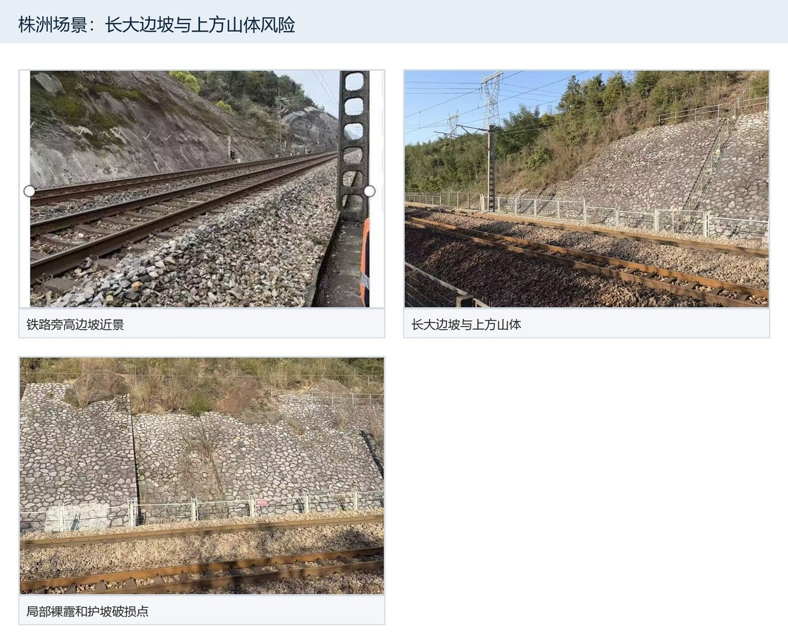
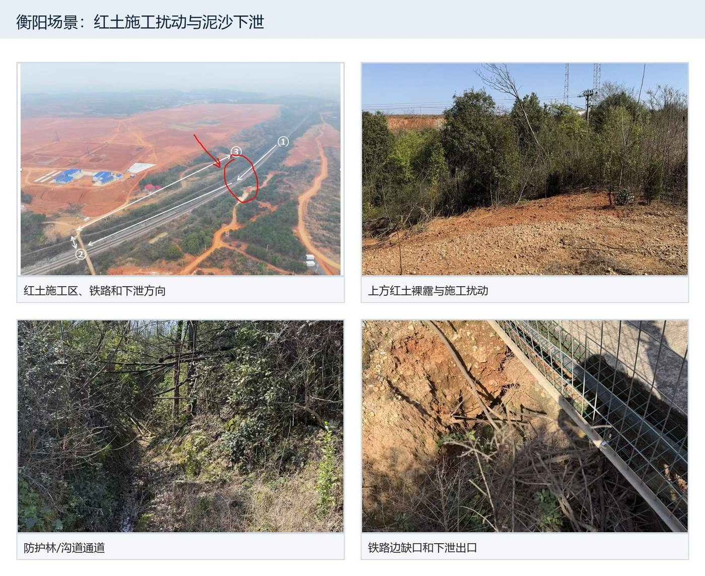
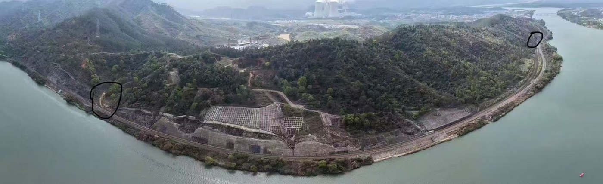
2.2 影像与影像对
影像采用 Sentinel-2 L2A 级地表反射率产品，共 12 个波段（10 米、20 米、60 米波段统一重采样到 10 米网格），时间范围为 2021 年 7 月至 2026 年 7 月。变化检测的基本单元是“影像对”：每一期影像与它之前最近的一期清晰影像组成一对，前期影像先精确配准到后期影像的网格上（逐对估计平移量），使两期影像逐像元对齐。当某个变化框的前期影像需要换成更早的清晰影像时，该框单独组成一个“补充对”。整期被云遮挡、无法判读的影像对不参与训练和评价。
最终数据集共有 511 个影像对（其中补充对 34 个），三个测点的情况见表 2-2 和图 2-2。标注把每个像元记为三种状态之一：变化（1）、经核查的没变（0）、不算（255，不参与训练和评价，例如云下、看不清或不计入的季节性变化）。三个测点的变化量差别很大：衡阳北有大片施工区，变化像元占全部的 63%；株洲南最少，只有 1,752 个。
表 2-2 数据集概况（1 个像元 = 10 米 × 10 米 = 100 平方米）
| 测点 | 影像期数 | 时间范围 | 影像对（其中补充对） | 有变化的影像对 | 变化像元：真变化 / 水位 / 洪水 | 变化像元合计 | 经核查没变的像元 | 不算的像元占比 |
|---|---|---|---|---|---|---|---|---|
| 株洲南 | 170 | 2021-07-31 至 2026-07-12 | 182（13） | 19 | 1,460 / 292 / 0 | 1,752 | 3,931,914 | 67% |
| 衡阳北 | 199 | 2021-07-28 至 2026-07-10 | 215（17） | 59 | 11,566 / 841 / 0 | 12,407 | 10,677,241 | 24% |
| 韶关南 | 111 | 2021-07-28 至 2026-07-12 | 114（4） | 22 | 4,328 / 1,083 / 198 | 5,609 | 3,089,700 | 59% |
2.3 什么算“变化”：类别定义与判定方法
本研究关心的是反映地表实际改变、可能影响铁路安全的变化，而不是由季节或成像条件造成的光谱差异。标注时，每一处前后差异被判为三种结果之一：变化、没变或不算。最终计为“变化”的有三类：持续的真变化、水位变化和洪水；农田季节变化、林草物候、水色变化、雾和耀斑造成的伪变化等记为“不算”（表 2-3）。
表 2-3 变化标注的类别：哪些算变化、哪些不算
| 标注结果 | 类别 | 定义 | 在影像上的表现与判定依据 | 像元数（株洲南 / 衡阳北 / 韶关南） |
|---|---|---|---|---|
| 变化（1） | 持续的真变化 | 地表覆盖发生改变，并且之后持续存在（具体形式见表 2-4） | 植被指数明显下降，或可见光、短波红外明显变亮；对照之后的清晰影像，确认变化持续存在 | 1,460 / 11,566 / 4,328 |
| 水位变化 | 水塘、水库放水或蓄水；河汊、岸边涨落露滩 | 水陆边界移动，水体指数升高或降低；本身是一过性的，不要求持续 | 292 / 841 / 1,083 | |
| 洪水 | 江河涨水淹没岸边，几周内退去 | 岸边大片新出现水面，之后退回 | 0 / 0 / 198 | |
| 不算（255） | 农田季节变化 | 收割、翻耕、灌水、作物生长 | 发生在耕地上，每年同期重复出现 | — |
| 林草物候 | 林地、草地随季节变绿变黄 | 大范围同步变化，往年同期也出现 | — | |
| 水色变化 | 水变浑或变清，水面范围不变 | 水体内部颜色变化，水陆边界不动 | — | |
| 成像造成的伪变化 | 雾、薄云、耀斑使影像变亮或变暗 | 整片同时变化，几天之内恢复 | — | |
| 植被恢复（暂不算） | 清过的地方重新长绿 | 全库只有 1 对，各测点补齐后再改回“变化” | — | |
| 说不清 / 这一对看不出 | 判读人员无法确定，或变化太小、在这一对影像上看不出 | 按“看不准就不算”处理 | — | |
| 没变（0） | 经核查的稳定区域 | 判读人员看过、确认没有变化的区域 | — | — |
“持续的真变化”在本数据中包括以下几种具体形式（表 2-4、图 2-3）。它们在标签中统一记为“变化”，不再细分；表中的子类和片数根据标注员对每一片变化的文字记录归纳。需要说明的是，在本批三个测点、2021—2026 年的影像中没有标到滑坡；与之最接近的是韶关南的 1 处坡面冲沟。
表 2-4 “持续的真变化”的具体形式（片数、像元数根据标注员对每一片变化的文字记录归纳）
| 子类 | 定义 | 在 10 米影像上的典型表现 | 片数 | 像元数 |
|---|---|---|---|---|
| 施工清表 | 施工前清除地表植被，林地、灌草地或农田变为裸露地表；包括施工区向外扩大 | 植被指数大幅下降、地表变亮，边界较规则，之后持续裸露 | 22 | 7,517 |
| 开挖（含挖塘） | 挖方形成路堑、基坑、取土坑，或挖出新的水塘 | 露出新鲜土石（变亮），或出现新水面且不再消失 | 2 | 639 |
| 新裸土 | 施工区内外新出现的裸露地块（堆土、弃土、场地平整），大小不限 | 新的亮斑，持续存在 | 77 | 3,336 |
| 新修道路 | 新出现的道路、施工便道 | 一到数个像元宽的连续线状亮带 | 21 | 925 |
| 新建 | 新建房屋、场地 | 规则的亮斑，持续存在 | 4 | 184 |
| 填平（填塘） | 水塘、洼地被填平 | 水面消失，变为裸土或场地 | 1 | 116 |
| 山坡开垦（梯田） | 成片开垦山坡、修梯田 | 沿等高线排列的条带状新裸土，可持续一年以上再复绿 | 14 | 2,438 |
| 林地采伐或退化 | 成片林木被砍伐或明显退化 | 植被指数从约 0.7 降到 0.2—0.5，一到两年才长回 | 49 | 975 |
| 坡面冲沟或滑坡 | 山坡上新出现冲沟，或坡体沿坡面滑移 | 树枝状亮线，或舌状、扇状的新裸露区 | 1 | 685 |
| 其余 | 同一事件的延续部分、施工区碎屑等，文字记录未单独说明类型 | — | 12 | 539 |
| 合计 | 203 | 17,354 |
图 2-3 四类典型变化的实例（每组从左到右：前期影像、后期影像、人工标注；左下角为比例尺，点击可放大）
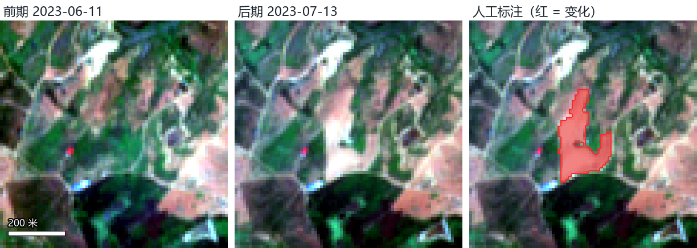
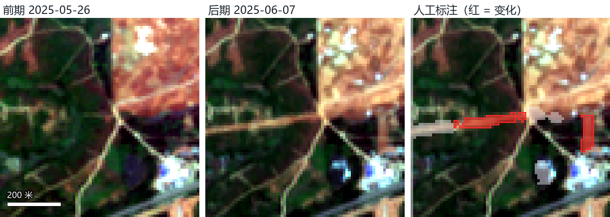
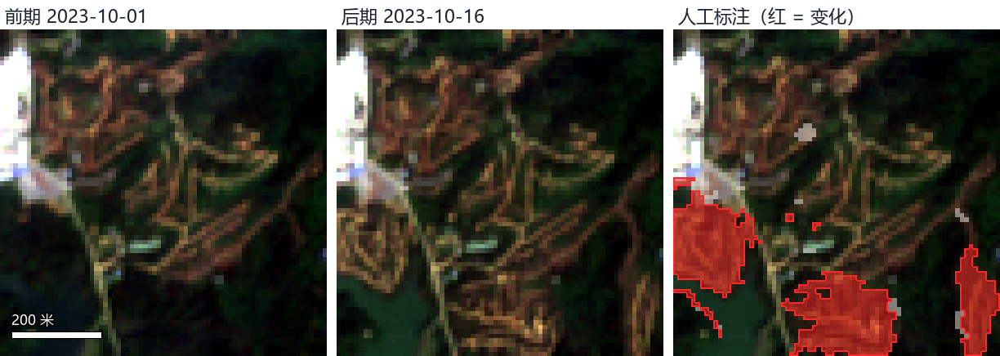
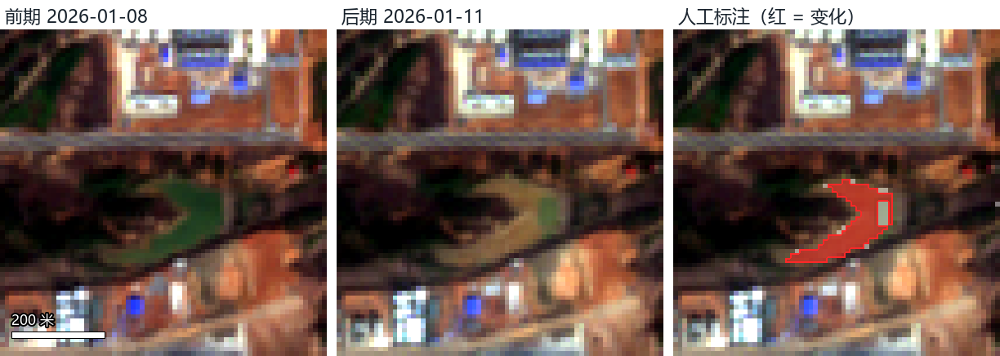
判定方法。 判定分三步完成（流程见 2.4 节）：同学逐期对比前后两期影像，在发生变化的地方画框并选择变化类别；组长逐框确认；之后在确认过的框内逐像元精细标注，一个 10 米像元有一多半面积发生变化才记为“变化”。为了区分真变化与季节性、成像造成的假变化，判定时不只看前后两期，而是查看这一位置的整个时间序列：变化之后在后续清晰影像中持续存在的，记为“持续的真变化”；每年同期重复出现的（农田、林草物候）和几天之内恢复的（雾、耀斑），记为“不算”；水位变化和洪水本身是一过性的，不要求持续。对全部“持续的真变化”逐像元复核表明，91% 的像元在之后的清晰影像中保持变化后的状态。
2.4 标注流程与标注平台
标注在我们自建的网页标注平台上完成，平台对团队成员开放，可以直接打开查看（下方链接）。流程分为四步：
- 逐期判读：同学在判读系统中逐期工作。第一步判断这一期影像能否看清（云、雾、阴影等）；第二步与前期影像并排同步缩放比较，在地面发生变化的地方画框，并选择变化类别（裸土或施工、建筑、道路、植被、水面的增加或减少）。
- 组长确认：组长逐框确认、修改或否决，并可为某个框指定更合适的前期影像。
- 逐像元精标：在确认过的框内逐格（10 米）标出“变化”和“拿不准”。先由 AI 按统一规则给出建议，再经多轮自动核查和组长复核。
- 生成标签：按统一规则把判读结果转成 0 / 1 / 255 的逐像元标签。
三个测点共画出 432 个变化框。
3 评价方法
平台相关页面：1.5 评价协议
3.1 两种测试方式
变化检测模型将来要用在两种场景：一是用到没有标注过的新地点，二是在已标注的地点继续监测以后的影像。我们据此设计了两种测试方式（表 3-1）。
- 换测点（检验能否推广到新地点）：三个测点轮流留出一个作为测试，用另外两个测点训练，共做三轮，称为三“折”（留株洲南、留衡阳北、留韶关南）。验证集从两个训练测点中按时间分组抽取约 20%，只用于选择门槛和决定何时停止训练；测试测点的数据不参与任何训练和调参。最后把三轮测试的结果合并（三轮的 TP、FP、FN 分别相加）计算一个总的 F1，称为换测点总体 F1。第 4.3 节及以前同时报告两种测试的结果；从 4.4 节起，统一使用换测点总体 F1，因为它最能反映模型推广到新地点的能力。
- 同测点新时期（检验能否用于以后的监测）：三个测点使用同一组时间切点，后期影像日期在 2024 年 7 月 1 日之前的影像对用于训练，2024 年 7 月 1 日至 12 月 31 日的用于验证，2025 年 1 月 1 日及以后的用于测试。
防止信息泄漏。 同一处变化往往跨越多期影像，例如一个施工区会连续几个月扩大。如果它的前几期在训练集、后几期在测试集，模型等于“见过答案”。为此我们把影像对按季度和变化过程分组，同一组只能整体进入训练、验证或测试中的一个；与验证集或测试集共用同一景影像的训练对也一并剔除。
表 3-1 两种测试方式的数据划分（影像对数 / 其中标为变化的像元数）
| 测试方式 | 训练 | 验证 | 测试 |
|---|---|---|---|
| 换测点 · 留株洲南 | 249 对 / 15,623 像元 | 70 对 / 1,290 像元 | 182 对 / 1,752 像元 |
| 换测点 · 留衡阳北 | 231 对 / 5,737 像元 | 57 对 / 521 像元 | 215 对 / 12,407 像元 |
| 换测点 · 留韶关南 | 314 对 / 13,372 像元 | 75 对 / 787 像元 | 114 对 / 5,609 像元 |
| 同测点新时期 | 254 对 / 16,008 像元 | 70 对 / 1,549 像元 | 180 对 / 1,899 像元 |
3.2 评价指标
评价以像元为单位，标为“不算”（255）的像元不参与计算。记 TP 为模型报为变化、人工也标为变化的像元数，FP 为模型报为变化、但人工标为没变的像元数（误报），FN 为人工标为变化、但模型没有报出的像元数（漏报），则精确率 P、召回率 R 和 F1 为：
P = TP / (TP + FP) R = TP / (TP + FN) F1 = 2PR / (P + R)
精确率回答“报出的变化里有多少是真的”，召回率回答“真实的变化有多少被找到”，F1 是两者的调和平均，取值 0—1，越高越好。模型对每个像元输出一个变化概率，需要一个门槛把概率转成“报”或“不报”。门槛只在验证集上选择（取使验证集 F1 最大的值），然后原样用于测试集，测试集不参与任何选择。全文的主要数字都按这一规范方式计算。
以事件为单位的指标。 上述精确率、召回率和 F1 都按像元计算，面积大的变化权重大。实际监测更关心“一处变化有没有被发现”“报出的一处变化是不是真的”，因此我们同时以事件为单位进行评价（6.2 节）。具体做法是：把人工标为变化的像元按相邻关系（8 连通）划分成一片一片的变化，面积不小于 4 个像元（400 平方米）的每一片记为一个真实事件；若一个真实事件中至少 30% 的像元被模型报为变化，记为检出。同样，把模型报为变化的像元划分成一片一片的报出区域；若一个报出区域与人工标为变化的像元没有任何重叠，记为误报区域（落在“不算”范围内的部分不计，评价范围内不足 4 个像元的报出区域不统计）。由此定义：
- 事件检出率 = 检出的真实事件数 ÷ 真实事件数；事件漏检率 = 1 − 事件检出率；
- 误报区域占比 = 误报区域数 ÷ 报出区域数；事件精确率 = 1 − 误报区域占比；
- 事件 F1 = 事件精确率与事件检出率的调和平均。
3.3 如何区分真实差异与随机波动
深度学习模型的结果会随随机种子（参数初始化、样本顺序）而波动。最好的方案换 3 个随机种子，换测点合并 F1 为 0.615 ± 0.013；而有些不稳定的配置波动大得多，例如不加辅助信息的 OlmoEarth 在留衡阳北测试时，两个种子的 F1 分别为 0.072 和 0.218。受算力限制，多数实验只训练了一次，因此我们采用保守的判读规则：一个改动与参照相比，只有当三折合并的 F1 相差至少 0.03，并且三个测点各自的差值方向一致时，才判为“稳定更好”或“稳定更差”；否则判为“差异不显著”，即差别没有超出随机波动可能造成的范围。
4 变化检测方法比较
平台相关页面：2.2.3 变化检测 · 6.2 参考文献
4.1 候选方法
我们比较了四类、共 17 种方法（表 4-1）：（1）不需要训练的传统方法，作为下限参照；（2）经典卷积网络；（3）Transformer 与状态空间网络；（4）近两年发布、原生支持 Sentinel-2 多光谱输入的遥感大模型。第 2、3 类网络原本为 0.5 米左右的高分辨率 RGB 影像设计，我们把它们的第一层扩展为可以接收多个波段；遥感大模型在大量 Sentinel-2 影像上预训练过，原生支持多个波段，我们用 LoRA（低秩适配）的方式在本数据上微调。所有深度学习方法使用相同的数据划分、训练样本和评价程序，并采用“难负样本”训练：对“光谱明显变化、但人工判为没变”的像元加大采样比例，让模型学会区分伪变化。
表 4-1 参与比较的方法
| 类别 | 方法 | 出处 | 原理（一句话） | 原生支持的输入 |
|---|---|---|---|---|
| 传统方法 （不训练） | CVA 变化向量分析 | Malila，1980 | 两期多波段差值向量的长度作为变化强度，超过门槛判为变化 | 任意多光谱两期 |
| IR-MAD | Nielsen，IEEE TIP，2007 | 迭代重加权的多元变化检测：用典型相关找出两期之间最不相关的波段组合，输出变化统计量 | 任意多光谱两期 | |
| ΔNDVI 植被指数差 | 经典做法 | 两期植被指数之差的绝对值，超过门槛判为变化 | 红光 + 近红外两期 | |
| 红波段差 | 经典做法，作极简参照 | 两期红波段之差（或只取变亮部分）作变化分数 | 红波段两期 | |
| 经典卷积网络 | FC-EF | Daudt 等，ICIP，2018 | 早融合：两期影像按通道叠在一起，送进一个全卷积编码—解码网络 | 任意波段数（原文在 Sentinel-2 13 波段和 RGB 上都做过） |
| FC-Siam-conc | 同上 | 孪生：两期分别过同一个编码器，解码时把两期特征拼接 | 同上 | |
| FC-Siam-diff | 同上 | 孪生：同上，但解码时用两期特征之差 | 同上 | |
| U-Net | Ronneberger 等，MICCAI，2015 | 经典编码—解码分割网络；两期按通道叠在一起输入，编码器用 ImageNet 预训练的 ResNet-34 | RGB（本项目把第一层扩到多波段） | |
| SNUNet-CD | Fang 等，IEEE GRSL，2022 | 孪生 + 嵌套密集连接的 U-Net，再加通道注意力 | 高分 RGB（本项目扩到 6 波段） | |
| Transformer 与 状态空间网络 | BIT | Chen 等，IEEE TGRS，2022 | 卷积网络提特征后压缩成少量“语义单元”，用 Transformer 建模两期之间的关系 | 高分 RGB（本项目扩到 6 波段） |
| ChangeFormer | Bandara 与 Patel，IGARSS，2022 | 孪生的层级 Transformer 编码器 + 轻量解码头 | 高分 RGB（本项目扩到 6 波段） | |
| Changer | Fang 等，IEEE TGRS，2023 | 编码过程中交换两期的部分特征（空间交换、通道交换），让两期充分交互 | 高分 RGB（本项目扩到 6 波段） | |
| BAN | Li 等，IEEE TGRS，2024 | 冻结的 CLIP 视觉大模型 + 轻量变化检测网络，中间用桥接模块传递通用特征 | 只能用 RGB（CLIP 部分不支持多波段） | |
| ChangeMamba | Chen 等，IEEE TGRS，2024 | 用状态空间模型（Mamba）建模长距离空间关系和两期的时空关系 | 高分 RGB（本项目扩到 6 波段） | |
| 遥感大模型 （原生支持 Sentinel-2） | TerraMind 1.0（base、large 两种大小） | IBM 与欧洲航天局等，Jakubik 等，2025 | 多模态遥感大模型，用 Sentinel-2、Sentinel-1、高程等多种数据预训练；本项目取它的编码器，两期特征相减或拼接后解码 | Sentinel-2 L2A 12 波段（还支持雷达、高程等）；单期模型，两期靠外加时间包装 |
| Prithvi-EO-2.0（3 亿、6 亿参数两种） | NASA 与 IBM，Szwarcman 等，2024 | 在 HLS（Landsat 与 Sentinel-2 协调数据）多时相数据上预训练的遥感大模型 | HLS 6 波段（蓝、绿、红、窄近红外、两个短波红外），原生多时相 | |
| OlmoEarth v1.2 base | 艾伦人工智能研究所（Ai2），2025 | 在 Sentinel-2、Sentinel-1、Landsat 多时相数据上预训练的遥感大模型；本项目把前后两期当作长度为 2 的时间序列直接输入 | Sentinel-2 L2A 12 波段，原生多时相 |
4.2 输入：只用 RGB、多光谱、多光谱加辅助信息
问题。 只用普通真彩色影像（RGB 三个波段）够不够？多光谱波段和辅助信息分别带来多少提升？做法。 对同一个模型分别用三种输入训练，其余条件完全相同。
表 4-2 三种输入下的 F1（每格为“换测点 / 同测点新时期”）
| 模型 | 只用 RGB | 多光谱、不加辅助 | 多光谱 + 全部辅助 |
|---|---|---|---|
| FC-EF | 0.234 / 0.247 | 0.214 / 0.238 | 0.567 / 0.373 |
| FC-Siam-diff | 0.165 / 0.252 | 0.189 / 0.085 | 0.577 / 0.392 |
| FC-Siam-conc | 0.205 / 0.267 | 0.128 / 0.282 | 0.580 / 0.376 |
| U-Net | 0.296 / 0.391 | 0.109 / 0.374 | 0.464 / 0.315 |
| ChangeMamba（tiny） | 0.413 / 0.390 | — | 0.111 / 0.479 |
| Changer | 0.255 / 0.377 | — | 0.531 / 0.359 |
| SNUNet-CD | 0.167 / — | — | 0.542 / 0.319 |
| BIT | — / 0.292 | — | 0.442 / 0.279 |
| ChangeFormer | 0.218 / 0.403 | — | 0.120 / 0.438 |
| BAN（原生只支持 RGB） | 0.357 / 0.389 | — | — |
| OlmoEarth v1.2 base | 0.179 / 0.474 | 0.092 / 0.539 | 0.600 / 0.552 |
结果。 只用 RGB 时，各模型的换测点 F1 为 0.17—0.41，OlmoEarth 只有 0.179；改用多光谱后多数模型提高，再加上辅助信息后普遍大幅提高，OlmoEarth 达到 0.600。原因在于，本研究关心的变化多数面积小、反差弱，例如林地采伐、山坡开垦、施工区边缘的新裸土，在 10 米真彩色影像上很难与季节变化和成像差异区分；近红外和短波红外波段对植被、水分和裸土敏感，辅助信息又提供了成像条件和历史背景（第 5 节），两者都是不可缺少的判别依据。
4.3 候选模型对比
做法。 所有模型都使用多光谱波段（遥感大模型用其原生支持的波段，经典网络用 6 个波段）加全部 46 个辅助信息层，在两种测试下比较。
表 4-3 各候选模型加全部辅助信息后的 F1（换测点按留出的测点分列；最后一列为不加辅助信息时的“换测点 / 同测点新时期”）
| 候选模型 | 留株洲南 | 留衡阳北 | 留韶关南 | 换测点总体 | 同测点新时期 | 不加辅助信息 |
|---|---|---|---|---|---|---|
| OlmoEarth v1.2 base | 0.482 | 0.577 | 0.718 | 0.600 | 0.552 | 0.092 / 0.539 |
| Prithvi-EO-2.0 300M | 0.071 | 0.620 | 0.634 | 0.596 | 0.249 | — |
| Prithvi-EO-2.0 600M | 0.149 | 0.464 | 0.637 | 0.481 | 0.430 | — |
| TerraMind 1.0 base | 0.149 | 0.598 | 0.578 | 0.565 | 0.284 | — |
| TerraMind 1.0 large | 0.075 | 0.407 | 0.609 | 0.431 | 0.267 | — |
| FC-EF | 0.112 | 0.589 | 0.603 | 0.567 | 0.373 | 0.214 / 0.238 |
| FC-Siam-diff | 0.284 | 0.584 | 0.626 | 0.577 | 0.392 | 0.189 / 0.085 |
| FC-Siam-conc | 0.112 | 0.617 | 0.552 | 0.580 | 0.376 | 0.128 / 0.282 |
| U-Net（早融合） | 0.057 | 0.485 | 0.495 | 0.464 | 0.315 | 0.109 / 0.374 |
| ChangeMamba（tiny，早融合） | 0.196 | 0.089 | 0.531 | 0.111 | 0.479 | — |
| Changer（早融合） | 0.136 | 0.579 | 0.485 | 0.531 | 0.359 | — |
| ChangeFormer（早融合） | 0.146 | 0.102 | 0.536 | 0.120 | 0.438 | — |
结果。 只看换测点总体 F1，OlmoEarth（0.600）、FC-EF（0.567）和 Prithvi-300M（0.596）比较接近。但合并分数主要由变化像元最多的衡阳北决定（占全部变化的 63%），分测点看差别很大：除 OlmoEarth 外，所有模型在留株洲南测试时都表现很差（F1 只有 0.057—0.284），OlmoEarth 为 0.482；在同测点新时期测试中，OlmoEarth 也明显领先（0.552，其余模型不超过 0.479）。也就是说，OlmoEarth 是唯一在三个测点、两种测试下都表现稳定的模型，因此选作后续融合实验的主模型。
难负样本的作用。 难负样本训练对 OlmoEarth 很关键：同样的设置不用难负样本时，换测点总体 F1 只有 0.256（留衡阳北一折为 0.214）。对经典网络则作用不一，例如 FC-EF 不用难负样本时换测点为 0.607，用了反而为 0.567，但同测点新时期由 0.319 提高到 0.373。
4.4 最终方案：模型结构与训练方法
综合 4.2、4.3 节的模型比较和第 5 节的融合实验，最终方案为：以 OlmoEarth v1.2 base 遥感基础模型为主干，前后两期影像作为时间序列输入，用 LoRA 做参数高效微调；地形、指数差、往年同期三组共 18 个辅助信息层通过“后段旁支”接入（三组的取舍见 5.5 节）；训练时专门加入“难负样本”。本节按方法论文的体例逐项说明，整体结构见图 4-3，全部训练设置见表 4-4。
4.4.1 总体框架
给定同一地点前后两期 Sentinel-2 影像 x₁、x₂（各 12 个波段）和该影像对的 18 个辅助信息层 a（地形 5 层、指数差 6 层、往年同期 7 层），模型为每个 10 米像元输出“发生了需要报告的变化”的概率 p。框架由四部分组成：（1）OlmoEarth 编码器，把两期影像共同编码为逐时相的特征；（2）变化解码器，把两期特征及其差值逐级上采样回 10 米分辨率，输出变化分数 y；（3）后段旁支，结合辅助信息对变化分数做修正 Δ；（4）门槛，把概率 p 转成“报”或“不报”。
4.4.2 输入与预处理
影像使用 Sentinel-2 L2A 级地表反射率的 12 个波段（B1—B9、B8A、B11、B12），先按 OlmoEarth 预训练时的波段顺序重新排列，再用其预训练数据的统计量逐波段归一化：
x' = (x − (μ − 2σ)) / (4σ)
其中 μ、σ 为预训练数据中该波段的均值和标准差，这样输入的数值分布与预训练时一致。前期影像事先已精确配准到后期影像的网格上（2.2 节）。训练时从每个 256 × 256 的影像对中随机裁出 128 × 128 的切片（OlmoEarth 官方建议输入边长不超过 128 像元），并做随机水平、垂直翻转和 90° 旋转。
4.4.3 主干网络：OlmoEarth 编码器
原始工作。 OlmoEarth 由艾伦人工智能研究所（Ai2）的 Herzog、Bastani、Zhang 等 26 位作者提出（arXiv:2511.13655，2025 年 11 月），是一个面向对地观测的多模态、时空基础模型。原作者的主要工作如下。
- 预训练数据。 在全球范围内，按 OpenStreetMap 的 120 类地物选取了 285,288 个样本，每个样本覆盖 2.56 km × 2.56 km、一年的时间范围（在 2016—2024 年之间随机选取），最多包含 12 个月度时相，全部重采样到 10 米分辨率。输入观测包括 Sentinel-2、Sentinel-1 和 Landsat-8；另有 WorldCover、WorldCereal、美国农田数据层、OpenStreetMap、SRTM 高程、树冠高度 6 种地图产品，只作为预训练的预测目标，不作为输入。
- 模型结构。 基于 ViT 的编码器—解码器 Transformer：影像按可变大小的补丁（训练时 1—8 个像元，评估时 4 个像元）切成特征单元，再加上空间、时间和模态编码。共有 Nano（140 万参数）、Tiny（620 万）、Base（9,000 万）、Large（3 亿）四种规模。
- 预训练方法。 提出“潜空间掩码图像建模”的改进版 Latent MIM Lite：按模态和时相把一部分输入遮住，让模型在潜空间中预测被遮住部分的表示；预测目标由随机初始化后冻结的线性投影得到，以避免表示坍塌。同时配合按模态的掩码策略、同一模态内的对比损失和样本级的对比损失。
- 实验与结果。 在 GEO-Bench（m-bigearthnet、m-so2sat、m-eurosat 等 7 个数据集）、BreizhCrops、CropHarvest、PASTIS、MADOS、Sen1Floods11 等研究基准上，以及与外部合作机构的真实任务（全球红树林监测、亚马孙森林损失驱动因素、肯尼亚土地覆盖、作物类型、船只检测、太阳能电站检测等）上，与 AnySat、Clay、CopernicusFM、CROMA、DINOv3、Galileo、Presto、Prithvi v2、Satlas、TerraMind 等 12 个基础模型比较：只用其特征直接评估（k 近邻、线性探针）时，24 个任务中 15 个最好；全量微调时，29 个任务中 19 个最好。在全球红树林监测任务上，把原有随机森林方法的 F1 从 95.3% 提高到 98.1%。
- v1.2 版本。 Tseng 等（arXiv:2605.20804，2026）在保持精度基本不变的前提下改进了训练和推理效率：Base 模型的训练 GPU 时长减少到约三分之一，Sentinel-2 任务的推理计算量减少到约 1/2.9。本研究使用的就是 v1.2 base。
需要说明，原论文的评估任务以分类、分割和目标检测为主，其中没有 OSCD 这类标准的双时相变化检测基准；把它用于铁路沿线的变化检测，是本研究的新尝试。OlmoEarth 的预训练样本恰好也是 2.56 km × 2.56 km、10 米分辨率、以多时相 Sentinel-2 为主要输入，与本研究每个测点的数据形式高度一致，这可能是它在本研究中表现最稳定的原因之一（4.3 节）。
本研究的用法。 我们使用 v1.2 base 版本：12 层 Transformer，特征维度 768；实际加载的编码器共有 113,987,776 个参数。
与把两期影像分别输入同一个编码器的“孪生”做法不同，OlmoEarth 原生支持时间序列：我们把前后两期作为长度为 2 的时间序列一起送入编码器，Transformer 的注意力机制可以直接在两期之间交换信息。影像被切成 4 × 4 像元（40 米 × 40 米）的小块，每个小块在每个时相上得到一个 768 维的特征向量，记为 f₁、f₂。
4.4.4 参数高效微调：LoRA
OlmoEarth 编码器有 1 亿多个参数，而本研究每一折的训练集只有约 230—310 个影像对（表 3-1）。若更新全部参数，模型很容易过拟合，还会破坏预训练学到的通用特征。为此我们采用 LoRA（低秩适配，Hu 等，ICLR 2022）：冻结编码器的全部原始参数，只在每一层注意力的查询（q）和值（v）投影矩阵旁边各加一个可训练的低秩修正：
W' = W + (α/r)BA
其中 W 是冻结的原始权重（768 × 768），A（r × 768）和 B（768 × r）是可训练的低秩矩阵，秩 r = 16，缩放系数 α = 16。B 初始化为 0，因此训练开始时模型与预训练模型完全相同。12 层共新增 589,824 个可训练参数。连同解码器和旁支，整个模型的可训练参数为 1,619,908 个，只占全部 115,607,684 个参数的 1.4%。
4.4.5 变化解码器
在每个 40 米小块上，把两期特征及其差值拼接成 [f₁, f₂, f₂ − f₁]（3 × 768 = 2,304 维）。其中差值项 f₂ − f₁ 直接突出两期之间的差异，是变化检测中常用的做法。拼接后的特征先经 1 × 1 卷积压缩到 256 维，再经过两次“双线性上采样 2 倍 + 3 × 3 卷积”恢复到 10 米分辨率（通道数 256 → 128 → 64），再经一层 3 × 3 卷积，得到 64 维的像元特征 h；最后用 1 × 1 卷积输出“没变”“变化”两类分数 y。推理时，对整幅 256 × 256 影像按 128 × 128 的窗口、64 像元的步长滑动，重叠部分的特征取平均，以消除窗口边缘的接缝。
4.4.6 辅助信息的后段旁支
把像元特征 h 与 18 个辅助信息层 a 在每个像元上拼接，经过两层 3 × 3 卷积（宽度均为 32，第二层用 2 倍空洞卷积以扩大感受野）和一个 1 × 1 卷积，得到对两类分数的修正量 Δ，与主干的输出相加：
ŷ = y + Δ Δ = g([h, a])
g 的最后一层初始化为 0，因此训练开始时 Δ = 0，模型等价于只用影像；训练中只有当辅助信息确实有助于降低损失时，g 才会学到非零的修正。旁支共 33,090 个参数。之所以把辅助信息“后接”在输出端，而不是送进编码器，是因为这种方式完全不改动预训练特征，对训练数据量的要求最低；第 5 节的对比实验证实，它优于在网络中间层注入的各种方式。
4.4.7 训练样本的组织与难负样本
在全部有效像元中，变化像元只占 0.11%，极不平衡；而模型最容易出错的，恰恰是那些光谱变化很明显、但并不属于需要报告的变化的地方。训练样本的组织因此包括三项设计。
- 有变化的影像对加权抽样。 每次从训练影像对中随机抽取，有变化的影像对被抽中的概率是没有变化的 3 倍。
- 以变化为中心的裁剪。 对有变化的影像对，有 50% 的概率让 128 × 128 的切片包含一个随机选取的变化像元，保证模型经常见到变化。
- 难负样本。 这是最终方案中作用最大的一项设计，下面详细说明。
什么是难负样本。 在机器学习中，“负样本”指不属于目标的样本，在本研究中就是标为“没变”的像元。绝大多数负样本很“容易”：两期之间几乎没有光谱差异，模型很容易判对。“难负样本”是指那些人工核查确认没有需要报告的变化、但两期之间光谱差异很大的像元。它们正是最容易被误报的地方：施工区内部已经裸露的地面颜色深浅变化、厂房屋顶的亮度变化、农田和林草的季节变化、水色变化和水面耀斑、薄雾使地表整体变亮等。如果按普通方式随机抽样，这类像元在训练中出现得很少，模型就学不会“光谱变了，但不算变化”。
如何找出难负样本。 对每个影像对，先计算 6 个光谱指数的前后差：植被指数 NDVI、两种水体指数 NDWI 和 MNDWI、裸土指数 BSI、短波红外与近红外之差、可见光亮度（定义见表 5-1）。不同影像对的整体亮度和季节差别很大，同样的差值在一对影像中很“大”，在另一对中可能很普通。因此，每个指数差都在该影像对内部做稳健标准化：
zk = (dk − median(dk)) / (1.4826· MAD(dk))
其中 d_k 为第 k 个指数的前后差，中位数和中位数绝对偏差 MAD 只在两期都无云、无缺测的像元上计算；系数 1.4826 使 MAD 在正态分布下与标准差相当。一个像元若同时满足以下三个条件，就记为难负样本：（1）6 个 z 值中绝对值最大者不小于 3，即至少有一个指数的变化超过该影像对“典型变化”的 3 倍；（2）两期都无云、无缺测；（3）人工标为“没变”。
规模。 按此标准，全库共有 1,588,547 个难负样本像元，占标为“没变”像元的 9.0%；511 个影像对中有 493 个含有难负样本（表 4-5）。也就是说，几乎每个影像对里都有一些“光谱明显变了、但不算变化”的地方。图 4-4 是衡阳北的一个例子。
表 4-5 难负样本的规模
| 测点 | 影像对 | 含难负样本的影像对 | 难负样本像元 | 标为没变的像元 | 难负样本占比 |
|---|---|---|---|---|---|
| 株洲南 | 182 | 174 | 323,952 | 3,931,914 | 8.2% |
| 衡阳北 | 215 | 206 | 998,067 | 10,677,241 | 9.3% |
| 韶关南 | 114 | 113 | 266,528 | 3,089,700 | 8.6% |
| 合计 | 511 | 493 | 1,588,547 | 17,698,855 | 9.0% |
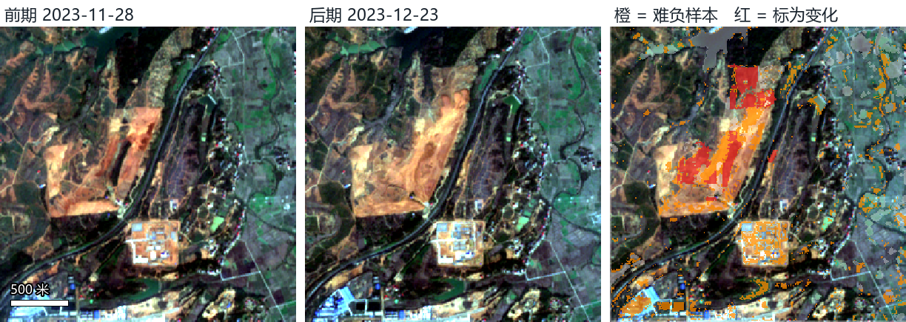
如何使用。 难负样本在训练中有两种用法。一是抽样：对没有对准变化像元的切片，有 50% 的概率让切片包含一个随机选取的难负样本像元，使模型经常见到这类“陷阱”。二是加权：在损失函数中，难负样本像元仍按“没变”计算，但其交叉熵权重乘以 5，使模型在这些地方误报时受到更重的惩罚。
作用。 以使用全部 46 层辅助信息的模型为例，其余设置完全相同，不使用难负样本时换测点总体 F1 只有 0.256，使用后提高到 0.600（表 4-6）。提升主要来自衡阳北：该测点施工区和水体多，光谱变化剧烈的地方多，不加难负样本时模型在这里大量误报（留衡阳北一折只有 0.214）。
表 4-6 难负样本的作用（以使用全部 46 层辅助信息的模型为例，其余设置完全相同，F1）
| 设置 | 留株洲南 | 留衡阳北 | 留韶关南 | 换测点总体 |
|---|---|---|---|---|
| 不使用难负样本 | 0.412 | 0.214 | 0.663 | 0.256 |
| 使用难负样本 | 0.482 | 0.577 | 0.718 | 0.600 |
4.4.8 损失函数
损失函数为交叉熵损失与 Dice 损失之和（权重各为 1），标为“不算”（255）的像元不参与计算：
ℒ = ℒCE + ℒDice
ℒCE = -(Σi wi log pi,yi) / (Σi wi) ℒDice = 1 − (2Σi pi yi + 1) / (Σi pi + Σi yi + 1)
其中 p_i 为像元 i 被判为变化的概率，y_i 为标签（1 为变化，0 为没变），p_{i,y_i} 为模型给真实类别的概率，w_i 为像元权重（难负样本为 5，其余为 1）。交叉熵逐像元约束分类结果；Dice 损失直接优化预测与标注的重叠程度，在变化像元占比极低时更稳健。
4.4.9 优化与训练设置
优化器为 AdamW，初始学习率 3 × 10⁻⁴，权重衰减 10⁻⁴；前 3 轮学习率线性预热，之后按余弦曲线衰减到初始值的 1%。批大小为 8，每轮 50 次迭代（即每轮看 400 个切片），最多训练 80 轮，使用混合精度计算和梯度裁剪（阈值 5）。每轮结束后在验证集上计算“最佳门槛下的 F1”，保存该值最高的模型；至少训练 20 轮，若连续 20 轮没有提升就提前停止。三折实际分别训练了 70、43、80 轮。
4.4.10 推理与门槛选择
测试时模型输出每个像元的变化概率 p。门槛取使验证集 F1 最大的值，三折分别为 0.005、0.808、0.920（依次为留株洲南、留衡阳北、留韶关南），然后原样用于测试测点，测试测点的数据不参与任何选择。门槛对结果的影响很大，详见 8.2 节。
表 4-4 最终方案的全部设置
| 项目 | 设置 |
|---|---|
| 主干网络 | OlmoEarth v1.2 base：12 层 Transformer，特征 768 维，补丁 4 × 4 像元（40 米） |
| 输入 | 前后两期各 12 个波段，作为长度为 2 的时间序列；训练切片 128 × 128 |
| 微调方式 | LoRA：秩 r = 16、缩放 α = 16，作用于每层注意力的 q、v 投影；编码器原始参数冻结 |
| 解码器 | [f₁, f₂, f₂ − f₁] → 1 × 1 卷积（256）→ 两次“上采样 2 倍 + 3 × 3 卷积”（128、64）→ 3 × 3 卷积 → 1 × 1 输出 |
| 辅助信息 | 18 层：地形 5、指数差 6、往年同期 7（取舍依据见 5.5 节）；后段旁支：两层 3 × 3 卷积（宽 32，第二层空洞率 2）+ 1 × 1 输出，末层零初始化 |
| 可训练参数 | 1,619,908 个（LoRA 589,824，旁支 33,090，其余为解码器），占全部 115,607,684 个的 1.4% |
| 训练样本组织 | 有变化的影像对抽样权重 3；有变化的影像对 50% 的切片对准变化像元；没对准变化的切片 50% 对准难负样本 |
| 难负样本 | 6 个指数差在影像对内稳健标准化后的最大绝对值 ≥ 3，两期都无云、无缺测，且人工标为没变；交叉熵权重 5 |
| 损失函数 | 交叉熵 + Dice（权重 1 : 1），标为“不算”的像元不参与计算 |
| 优化器与学习率 | AdamW，初始学习率 3 × 10⁻⁴，权重衰减 10⁻⁴；预热 3 轮后余弦衰减至初始值的 1% |
| 训练长度 | 批大小 8，每轮 50 次迭代；最多 80 轮，至少 20 轮，连续 20 轮验证 F1 不提升则停止；三折实际 70、43、80 轮 |
| 数据增强 | 随机水平、垂直翻转，90° 旋转 |
| 推理 | 128 × 128 滑动窗口、步长 64，重叠部分特征取平均；门槛取验证集 F1 最大的值 |
| 随机种子 | 0（单种子）。使用全部 46 层辅助信息的方案另用 3 个种子复核，换测点总体 F1 为 0.615 ± 0.013；三组方案的多种子复核列入下一周计划（8.3 节） |
5 多源辅助信息融合
平台相关页面：2.2.3 变化检测 · 2.2.4 伪变化抑制 · 五、方法改进
5.1 动机
两期影像之间的光谱差异并不都来自地表的真实改变。云、雾、耀斑和配准误差会造成假的差异；农田、林草的季节变化会造成真实但不需要报告的差异；同样的光谱变化，发生在山坡上还是平地上、常年有水的地方还是旱地上，含义也不同。仅凭前后两期影像，模型很难区分这些情况。因此，我们为每个影像对额外准备了 46 个辅助信息层，向模型提供成像条件、地表的历史状态和地形背景等“上下文”，期望模型据此把真变化和伪变化区分开。
5.2 辅助信息层的设计
46 个辅助信息层分为 6 组（表 5-1）。设计时遵循两条原则：一是每一组针对一类已知的伪变化来源或判别困难；二是所有历史类信息只使用前期影像日期及以前的数据，避免模型用到“未来”的信息。
表 5-1 46 个辅助信息层的设计
| 组（层数） | 包含的信息层 | 提供的信息 | 预期作用 |
|---|---|---|---|
| 成像质量（15） | 前后两期的厚云、薄云、云影、缺测分布；是否跨轨道、是否有雾、耀斑风险、两期间隔天数、配准位移 | 哪里的光谱差异可能来自成像条件 | 抑制云、雾、耀斑和错位造成的伪变化 |
| 指数差（6） | 植被指数（NDVI）、两种水体指数（NDWI、MNDWI）、裸土指数（BSI）、短波红外与近红外之差、可见光亮度的前后差 | 直接刻画植被减少、水面变化、裸土增加 | 把领域知识中的变化特征显式提供给模型 |
| 往年同期（7） | 前后两期的 NDVI、MNDWI、BSI 相对往年同期的偏离程度；往年同期可用观测数 | 当前状态是否“反常” | 区分季节性变化（往年也如此）和真实变化 |
| 雷达（6） | Sentinel-1 雷达 VV、VH 极化的前后差、交叉极化比变化；雷达可用性标记 | 不受云雾影响的地表结构变化 | 有云雾时补充信息 |
| 地形（5） | 相对高程、坡度、坡向（正弦、余弦）、局部起伏 | 地形背景 | 区分山坡与平地上的变化，识别山体阴影 |
| 用途历史（7） | 历史有水比例；历史 NDVI 的 10%、50%、90% 分位；历史裸土指数中位数；农田轮作比例；历史观测次数 | 这里平常是什么地物 | 识别季节变化多发的耕地和常年水体 |
5.3 融合方式
辅助信息在网络中的接入位置和方式不同，作用也可能不同。我们实现并比较了以下六种方式（表 5-2）。记前后两期影像为 x₁、x₂，辅助信息为 a，主模型的中间特征为 h。
表 5-2 辅助信息的六种融合方式
| 方式 | 接入位置 | 做法 | 设计意图 |
|---|---|---|---|
| 早融合 | 输入端 | 把辅助信息层和两期影像拼在一起作为输入；新增通道的第一层权重从 0 开始 | 最简单，让网络从一开始就同时看到全部信息 |
| 后段旁支 | 输出端 | 主模型照常处理两期影像；在输出前把主模型最后一层特征 h 与辅助信息 a 拼接，经两层小卷积网络 g 得到修正量，与主模型输出相加：ŷ = f(x₁, x₂) + g([h, a]) | 不改动预训练特征，只做残差修正，对数据量要求低 |
| 多尺度注入 | 解码器各层 | 把辅助信息做成 5 个尺度的特征金字塔 Z(a)，在各层注入，有四种形式：相加 h + Z(a)；FiLM 调制 h·(1 + γ(a)) + β(a)；门控 h + σ(G([h, a]))·Z(a)；交叉注意力 h + Z(Attn(q = h, k = a, v = a)) | 让辅助信息在多个尺度上影响特征，表达能力最强 |
| 分组随机丢弃 | 训练过程 | 训练时随机把某些组的辅助信息置零 | 防止模型只依赖最强的一组，也模拟监测时部分数据缺失 |
| 分支辅助损失 | 训练过程 | 给辅助信息分支单独接一个变化输出并计算损失 | 迫使辅助分支学到有用的特征 |
| 原生多模态 | 输入端 | 把雷达、高程作为 OlmoEarth 自身支持的输入模态，而不是外加的辅助层 | 利用大模型预训练时已学到的多模态知识 |
其中，后段旁支和多尺度注入的新增部分最后一层都初始化为 0，训练开始时模型与只用影像完全相同，辅助信息只有在确实有帮助时才会被逐渐用上。
5.4 实验设计
所有融合实验都以 OlmoEarth 为主模型，训练数据、标签、超参数和评价程序保持不变，每次只改变一个因素：
- 融合方式比较：固定使用全部 46 个辅助信息层，只改变接入方式；并在 FC-Siam-diff 上重复一遍，检验结论是否依赖于具体模型。
- 分组消融：用两种互补的做法衡量每一组信息的作用。“去掉一组”——从全部辅助信息中去掉某一组，看缺少它是否变差，衡量这组信息是否不可替代；“只用一组”——只给模型某一组辅助信息，看单靠它能恢复多少精度，衡量这组信息本身是否有用。
- 组内细分：对指数差组，再分别去掉植被、水体、土壤与亮度三个子组。
- 最终组合的验证：根据分组消融的结果，只保留去掉后会使精度下降的地形、指数差、往年同期三组（共 18 层），去掉雷达、成像质量和用途历史三组，其余设置不变，重新训练，并与全部 46 层比较。
5.5 结果
（1）融合方式。 后段旁支最好（换测点总体 F1 为 0.600）。四种多尺度注入都稳定更差：相加 0.232、FiLM 0.515、门控 0.467、交叉注意力 0.290；分组随机丢弃（0.523）和分支辅助损失（0.049）与后段旁支差异不显著（图 5-1、表 5-3）。在 FC-Siam-diff 上重复，后段旁支同样是最好的接入方式之一：FiLM稳定更差，其余差异不显著（表 5-4）。我们认为原因在于：OlmoEarth 在大量影像上预训练过，多尺度注入在网络中间层改写了预训练好的特征，而本研究的训练数据只有约 250 个影像对，不足以把这些层重新学好；后段旁支不改动预训练特征，只在输出端加一个从零开始的修正量，对数据量的要求低得多。
表 5-3 OlmoEarth 采用不同融合方式的 F1（判读规则见 3.3 节）
| 融合方式 | 留株洲南 | 留衡阳北 | 留韶关南 | 换测点总体 | 比参照 | 判读 |
|---|---|---|---|---|---|---|
| 后段旁支（参照） | 0.482 | 0.577 | 0.718 | 0.600 | — | 参照 |
| 多尺度注入：相加 | 0.411 | 0.184 | 0.714 | 0.232 | -0.369 | 稳定更差 |
| 多尺度注入：FiLM 调制 | 0.457 | 0.473 | 0.717 | 0.515 | -0.085 | 稳定更差 |
| 多尺度注入：门控 | 0.450 | 0.434 | 0.660 | 0.467 | -0.133 | 稳定更差 |
| 多尺度注入：交叉注意力 | 0.407 | 0.258 | 0.563 | 0.290 | -0.310 | 稳定更差 |
| 分组随机丢弃 | 0.488 | 0.479 | 0.715 | 0.523 | -0.077 | 差异不显著 |
| 分支辅助损失 | 0.322 | 0.037 | 0.722 | 0.049 | -0.551 | 差异不显著 |
| 原生多模态（雷达、高程作为模型自身的输入） | 0.387 | 0.555 | — | — | — | 未跑齐 |
表 5-4 在 FC-Siam-diff 上重复融合方式比较（参照为 FC-Siam-diff 加后段旁支）
| 融合方式 | 留株洲南 | 留衡阳北 | 留韶关南 | 换测点总体 | 比参照 | 判读 |
|---|---|---|---|---|---|---|
| 后段旁支（参照） | 0.284 | 0.584 | 0.626 | 0.577 | — | 参照 |
| 早融合（拼进输入） | 0.088 | 0.649 | 0.523 | 0.591 | +0.014 | 差异不显著 |
| 多尺度注入：相加 | 0.081 | 0.597 | 0.673 | 0.592 | +0.015 | 差异不显著 |
| 多尺度注入：FiLM 调制 | 0.072 | 0.532 | 0.615 | 0.528 | -0.048 | 稳定更差 |
| 多尺度注入：门控 | 0.102 | 0.553 | 0.633 | 0.547 | -0.030 | 差异不显著 |
| 多尺度注入：交叉注意力 | 0.071 | 0.383 | 0.631 | 0.408 | -0.168 | 差异不显著 |
| 分组随机丢弃 | — | — | — | — | — | 未跑齐 |
| 分支辅助损失 | — | — | — | — | — | 未跑齐 |
| 不加辅助信息 | 0.048 | 0.247 | 0.142 | 0.189 | -0.388 | 稳定更差 |
（2）分组消融。 结果见图 5-2 和表 5-5，可以归纳为三点。
- 辅助信息整体不可缺少，主要作用是帮助推广到新测点。 全部去掉后，换测点总体 F1 从 0.600 降到 0.092。下降几乎全部发生在留衡阳北测试的那一折（0.577 → 0.072），另外两折变化较小（株洲南 0.482 → 0.383，韶关南 0.718 → 0.648）。衡阳北的地物和变化类型与另外两个测点差别最大（大片施工区、水塘多），这说明辅助信息的主要作用是帮助模型推广到与训练测点差别很大的新测点。
- 各组之间有很强的互相替代性。 只用任意一组，换测点总体 F1 就能恢复到 0.49—0.58，其中成像质量、指数差、地形三组单独使用都稳定优于不加；这说明各组提供的信息有相当大的重叠，主要作用都是帮模型在衡阳北站稳。
- 在全部信息的基础上单独去掉一组时，只有地形组不可替代。 去掉地形组后三个测点都下降（总体 -0.054），判为“稳定有用”，说明坡度、起伏等地形信息是其他组提供不了的。去掉指数差（-0.052）或往年同期（-0.021）后总体 F1 也下降，但三个测点方向不一致，作用不稳定；去掉成像质量（-0.006）、用途历史（-0.015）几乎没有影响；去掉雷达后总体 F1 反而上升 +0.030，但株洲南、韶关南是下降的，目前没有证据表明雷达有用。
表 5-5 分组消融结果。“去掉这一组”与全部加入（换测点总体 F1 0.600）比；“只用这一组”与全不加（换测点总体 F1 0.092）比
| 辅助信息组 | 去掉：株洲南 | 去掉：衡阳北 | 去掉：韶关南 | 去掉：总体 | 判读 | 只用这一组：总体 F1 | 比全不加 | 判读 |
|---|---|---|---|---|---|---|---|---|
| 成像质量 | +0.027 | -0.013 | +0.017 | -0.006 | 差异不显著 | 0.558 | +0.466 | 稳定更好 |
| 指数差 | +0.012 | -0.049 | -0.078 | -0.052 | 差异不显著 | 0.565 | +0.473 | 稳定更好 |
| 往年同期 | -0.143 | -0.018 | -0.004 | -0.021 | 差异不显著 | 0.489 | +0.397 | 差异不显著 |
| 雷达 | -0.021 | +0.059 | -0.059 | +0.030 | 差异不显著 | 0.584 | +0.492 | 差异不显著 |
| 地形 | -0.029 | -0.056 | -0.025 | -0.054 | 稳定更差 | 0.585 | +0.492 | 稳定更好 |
| 用途历史 | +0.005 | -0.019 | -0.002 | -0.015 | 差异不显著 | 0.496 | +0.404 | 差异不显著 |
（3）指数差组内细分。 去掉土壤与亮度指数差，三个测点都下降（总体 -0.114），判为稳定有用；去掉水体指数差（-0.087）或植被指数差（-0.035），总体下降但方向不一致（表 5-6）。需要注意，只去掉一个子组（0.486）反而比去掉整个指数差组（0.548）还低，这提示单次训练的波动可能比预想的大，组内细分的结论需要用多个随机种子复核。
表 5-6 指数差组内细分（与全部加入比的差值）
| 改动 | 株洲南 | 衡阳北 | 韶关南 | 总体 F1 | 总体差值 | 判读 |
|---|---|---|---|---|---|---|
| 去掉植被指数差 | +0.018 | -0.027 | -0.069 | 0.565 | -0.035 | 差异不显著 |
| 去掉水体指数差 | +0.070 | -0.092 | -0.072 | 0.514 | -0.087 | 差异不显著 |
| 去掉土壤与亮度指数差 | -0.042 | -0.125 | -0.045 | 0.486 | -0.114 | 稳定更差 |
| 去掉整个指数差组 | +0.012 | -0.049 | -0.078 | 0.548 | -0.052 | 差异不显著 |
（4）最终组合。 按分组消融的结果，保留去掉后精度下降的三组：地形（去掉后换测点总体 F1 变化 -0.054，三个测点都下降）、指数差（-0.052）和往年同期（-0.021，三个测点都下降，株洲南下降最多）；去掉看不出作用的三组：雷达（去掉后反而 +0.030）、成像质量（-0.006）和用途历史（-0.015）。只用这三组共 18 层重新训练，换测点总体 F1 为 0.635（株洲南 0.466、衡阳北 0.638、韶关南 0.677），与全部 46 层（0.600）相比差 +0.034（三个测点分别为 -0.016、+0.061、-0.041），判为“差异不显著”；同测点新时期为 0.557（全部 46 层为 0.552）。两者差异不显著，而三组方案的输入少了 28 层，不再需要准备雷达影像和多年用途历史，数据准备和日常运行的工作量明显减少，因此把它作为最终方案（4.4 节）。需要说明：三组方案是在本机显卡（RTX 3090）上训练的，全部 46 层和各组消融是在服务器上训练的；同一个随机种子在不同机器上的结果也会有差别，量级与换随机种子相当（全部 46 层换 3 个种子，标准差 0.013）。
小结（表 5-7）。 辅助信息用后段旁支接入；最终方案只保留地形、指数差、往年同期三组。需要说明，分组消融和最终组合的比较都是单个随机种子的结果，“地形有用、雷达没有证据有用”以及三组方案与全部 46 层的比较，下一周用多个随机种子复核（8.3 节）。
表 5-7 各组辅助信息的作用小结与最终方案的取舍
| 辅助信息组 | 消融结论 | 去掉后换测点总体 F1 的变化 | 最终方案 |
|---|---|---|---|
| 成像质量 | 单独使用有用（稳定），但在全部信息中可被其他组替代 | -0.006 | 去掉 |
| 指数差 | 可能有用：去掉后合并下降，但各测点方向不一致 | -0.052 | 保留 |
| 往年同期 | 可能有用：去掉后合并下降，但各测点方向不一致 | -0.021 | 保留 |
| 雷达 | 没有证据表明有用：去掉后合并反而上升（各测点方向不一致） | +0.030 | 去掉 |
| 地形 | 稳定有用，且不可替代 | -0.054 | 保留 |
| 用途历史 | 单独使用有用（主要体现在衡阳北），但在全部信息中可被其他组替代 | -0.015 | 去掉 |
5.6 补充实验：融合方式还能不能再提高精度
问题。 5.5 节比较的四种多尺度注入都接在编码器之后的解码器里，辅助信息进不了 OlmoEarth 编码器的 12 层 Transformer，影响不到前后两期影像相互比对的那一步，所以“后段旁支最好”只在“解码器里的几种接法”之间成立。近年的研究在冻结或参数高效微调的基础模型上，常把其他模态以零初始化的方式接进骨干内部，使训练开始时不扰动预训练特征（ControlNet 的零卷积；MoBaNet 用适配器把辅助模态注入冻结的视觉基础模型）；多时相、多模态信息在编码器里早融合优于晚融合，且同类信息分组优于全部并成一组（MAESTRO）；遥感基础模型参数高效微调时，U 形解码器表现最好（Marti-Escofet 等，2025）。据此我们在最终方案（下称 F0）的基础上设计了五个候选（表 5-9）。判读规则在开跑前定好：与 F0 相比，三折合并 F1 差 ≥ 0.03 且三折方向一致，才算“稳定更好”或“稳定更差”，否则为“差异不显著”，此时保留更简单的方案；门槛和后处理参数只在验证期选，测试期不参与任何选择。
评价口径：同测点新时期，按年滚动三折。 第 3 节的“同测点新时期”只有一个时间切点，测试集只有 27 对影像有变化、1,899 个变化像元。本节改为按年滚动：每一折用测试年以前的影像对训练、测试年之前的半年验证（表 5-8），三折测试段互不重叠，合计 356 对影像、15,224 个变化像元；最后一折与第 3 节的同测点新时期逐对核对完全相同。
表 5-8 按年滚动三折的划分（影像对数 / 变化像元数）
| 折 | 训练 | 验证 | 测试 |
|---|---|---|---|
| 测 2023 年 | 2022-07 以前：61 / 3,655 | 2022 年下半年：82 / 787 | 2023 年：88 / 11,132 |
| 测 2024 年 | 2023-07 以前：187 / 7,117 | 2023 年下半年：46 / 7,985 | 2024 年：88 / 2,193 |
| 测 2025 年以后 | 2024-07 以前：254 / 16,008 | 2024 年下半年：70 / 1,549 | 2025-01 至 2026-07：180 / 1,899 |
为什么这里的 F1 比换测点高。 同一个最终方案，换测点三折合并 F1 为 0.635（5.5 节），按年滚动三折合并为 0.692。这不是模型变好了，而是考题不同：一是训练集里有同一测点的历史影像，比推广到没见过的测点容易（在同一批 2025 年以后的影像对上，使用全部 46 层的模型用时间划分训练 F1 为 0.552，用换测点训练只有 0.311）；二是三折合并时，测 2023 年这一折的变化像元占 73%（11,132 / 15,224），这一年正是衡阳北、韶关南施工的高峰，大片变化容易检出（F1 0.742），把合并值拉高；按折看是 0.742、0.631、0.557，三折平均 0.643。因此本节的数字只用于方案之间的比较，不能与换测点的成绩直接比较。
候选方案。 F1：辅助层按 4×4 像元分块，嵌入成前、后两期各一个 768 维向量，经零初始化的输出层加到两期影像的分块特征上（位置和时间编码之前），12 层 Transformer 都能用上辅助信息，训练开始时与 F0 完全相同；F2：同 F1，但地形、指数差、往年同期三组各用一套嵌入；F3：只保留 F1 的编码器端，去掉后段旁支；F4：结构同 F0，只把后段旁支的学习率乘 3；F6：原始两期影像经一个两级小卷积网络，10 米、20 米两级特征经零初始化的卷积加到解码器对应分辨率的上采样输出上（U 形解码器的跳连），用来弥补编码器 40 米分块对 1—19 像元小变化的不足。其余设置（18 层辅助信息、难负样本、训练轮数、随机种子 0）都与 F0 相同。
表 5-9 各融合方式在按年滚动三折上的 F1（验证集门槛；区间为按测点×分组整组重抽 2000 次的 95% 配对自助区间）
| 方案 | 做法 | 测 2023 年 | 测 2024 年 | 测 2025 年以后 | 三折合并 | 与 F0 的差（95% 区间） | 三折方向 | 判读 |
|---|---|---|---|---|---|---|---|---|
| F0 | 后段旁支（最终方案，参照） | 0.742 | 0.631 | 0.557 | 0.692 | — | — | 参照 |
| F1 | 编码器输入端相加 + 后段旁支 | 0.747 | 0.628 | 0.545 | 0.698 | +0.006（−0.014 至 +0.023） | 升、降、降 | 差异不显著 |
| F4 | 后段旁支，旁支学习率 ×3 | 0.765 | 0.626 | 0.509 | 0.698 | +0.006（−0.047 至 +0.021） | 升、降、降 | 差异不显著 |
| F6 | 高分辨率影像跳连（U 形解码器）+ 后段旁支 | 0.780 | 0.611 | 0.530 | 0.712 | +0.020（−0.033 至 +0.056） | 升、降、降 | 差异不显著 |
| F2 | 编码器输入端分组相加 + 后段旁支 | 0.696 | 0.559 | 0.499 | 0.643 | −0.049（−0.103 至 −0.013） | 降、降、降 | 稳定更差 |
| F3 | 只用编码器输入端相加（去掉后段旁支） | 0.705 | 0.537 | 0.099 | 0.403 | −0.289（−0.470 至 −0.038） | 降、降、降 | 稳定更差 |
结果。 F1、F4、F6 与 F0 差异不显著：三折合并分别高 0.006、0.006、0.020，但三折方向都是升、降、降，95% 区间都跨过 0，三折平均（0.640、0.634、0.640）也不高于 F0（0.643）。F2 稳定更差：分组嵌入比不分组（F1）多出约 59 万个参数，在约 250 对训练数据下更像是过拟合，株洲南下降最多（0.468，F0 为 0.636），与 MAESTRO“同类分组更好”的结论相反。F3 稳定更差：去掉后段旁支后，测 2025 年以后这一折只有 0.099，误报集中在衡阳北的 3 对影像上（合计 15,343 个像元，占这一折误报的 91%），训练中验证集 F1 最高也只有约 0.52——10 米分辨率、直接看辅助层的后段旁支不可缺少，编码器端（40 米分块）替代不了它。另一个值得注意的现象是，编码器端融合和高分辨率跳连的作用方向相反：F1 精确率 0.798（F0 0.749）、召回率 0.620（0.643），误报区域 191 个（289 个）；F6 召回率 0.684，误报区域 320 个。在换测点·留衡阳北这一折上（补充口径），F0 为 0.638，F1 为 0.599，F2 只有 0.019（验证集选出的门槛只有 0.002，大面积误报，与“不加辅助信息时留衡阳北失效”是同一种模式）。
不重训的改进。 两种后处理的参数都只在本折验证集上选：每个测点各自定门槛（该测点验证集变化像元不足 200 个时沿用全折门槛）；去掉报出区域中面积小于 k 个像元的连通片（k 从 0、3、5、9、17 中选）。结果见表 5-10，涨幅都不到 0.03，对最终方案几乎没有作用。原因是验证期只有半年，各测点的变化又少，门槛和 k 都选不稳，不能当作提分手段。
表 5-10 不重训的后处理（按年滚动三折合并 F1；参数只在验证期选）
| 方案 | 原来 | 每个测点各定门槛 | 去掉小图斑 | 两者都用 |
|---|---|---|---|---|
| F0 后段旁支（最终方案，参照） | 0.692 | 0.694 | 0.690 | 0.691 |
| F1 编码器输入端相加 + 后段旁支 | 0.698 | 0.711 | 0.698 | 0.712 |
| F4 后段旁支，旁支学习率 ×3 | 0.698 | 0.720 | 0.698 | 0.719 |
| F6 高分辨率影像跳连（U 形解码器）+ 后段旁支 | 0.712 | 0.708 | 0.710 | 0.707 |
随机种子与集成。 按方案的规则，入选的 F0 补训了两个随机种子（表 5-11）。同一配置换随机种子，单折相差可达 0.067（测 2024 年 0.635 对 0.568），比 F1、F4、F6 与 F0 之间的差别还大；三个种子的三折合并 F1 为 0.693、0.685、0.665，均值 0.681 ± 0.014。集成时把各模型输出的变化得分（对数几率差）取平均，门槛同样只在本折验证集上选。同一结构三个种子的集成为 0.687，没有收益；而 F0、F1、F6 三种结构的集成为 0.735，比 F0 三种子集成高 0.047，提升主要在测 2023 年（0.799 对 0.731），说明这部分提升不是“多个模型取平均”本身带来的，更可能来自编码器端融合（误报少）和高分辨率跳连（召回高）的互补。需要强调，这个组合是看过上面的结果后才设计的，只能算探索；我们已用新的随机种子重新训练 F1、F6，组成一个独立的集成做确认，结果出来后补充。
表 5-11 随机种子与集成（门槛只在本折验证集上选；F0 种子 0 在这里为 0.693，与表 5-9 的 0.692 的差别来自门槛搜索的分档）
| 组合 | 测 2023 年 | 测 2024 年 | 测 2025 年以后 | 三折合并 |
|---|---|---|---|---|
| F0 种子 0 | 0.742 | 0.635 | 0.556 | 0.693 |
| F0 种子 1 | 0.725 | 0.598 | 0.608 | 0.685 |
| F0 种子 2 | 0.713 | 0.568 | 0.582 | 0.665 |
| F0 三种子集成 | 0.731 | 0.608 | 0.597 | 0.687 |
| F0 + F1 + F6 集成（探索，待确认） | 0.799 | 0.637 | 0.558 | 0.735 |
| F1 + F6 集成（探索，待确认） | 0.791 | 0.642 | 0.552 | 0.731 |
小结。 在当前的 LoRA 微调体系和约 250 对训练数据下，没有一种更复杂的融合方式稳定好过简单的后段旁支；后段旁支本身不可缺少；不重训的后处理也提不了分。最终方案保持不变。可能有效的方向是不同融合方式的模型集成，待独立的确认实验完成后再定。
6 最终方案的结果
平台相关页面：四、精度评估与最优方案
本节分析最终方案（4.4 节）在换测点测试中的结果，即模型在训练时没有见过测试测点。
6.1 总体与分测点精度
表 6-1 最终方案在各测点上的精度（换测点测试）
| 测点 | 精确率 | 召回率 | F1 |
|---|---|---|---|
| 三站合并 | 0.567 | 0.721 | 0.635 |
| 株洲南 | 0.575 | 0.392 | 0.466 |
| 衡阳北 | 0.512 | 0.847 | 0.638 |
| 韶关南 | 0.894 | 0.545 | 0.677 |
韶关南最好（F1 0.677），衡阳北次之（0.638），株洲南最低（0.466）。株洲南的变化量最少（全部只有 1,752 个变化像元），而且多是零散的小块，少量的漏报和误报就会明显拉低 F1。三个测点合计，换测点总体 F1 为 0.635（精确率 0.57、召回率 0.72）。
6.2 以事件为单位的结果
按 3.2 节的定义，以事件为单位的结果见表 6-2。换测点测试中共有 236 个真实事件（面积 ≥ 4 个像元），检出 148 个，事件检出率 63%，漏检率 37%。分测点看，衡阳北的检出率最高（78%），韶关南 57%，株洲南只有 44%：株洲南的变化多是零散的小块，这与像元级的结果一致。
误报方面，模型共报出 702 处变化区域，其中 535 处与人工标注的变化没有任何重叠，误报区域占比 76%（事件精确率 24%），事件 F1 为 0.345。误报区域高度集中在衡阳北（495 处），株洲南、韶关南分别只有 24 处和 16 处。从影像对的角度看，在人工判定没有任何变化的 411 个影像对中，有 119 个（29%）被模型报出了至少一处误报；其中衡阳北 156 个影像对中有 95 个。
表 6-2 以事件为单位的评价（换测点测试；真实事件为面积 ≥ 4 个像元的变化片，检出指至少 30% 的像元被报出；误报区域指与人工标注的变化没有任何重叠的报出区域）
| 测点 | 真实事件 | 检出 | 事件检出率 | 漏检率 | 报出区域 | 误报区域 | 误报区域占比 | 事件精确率 | 事件 F1 | 无变化影像对中报出误报的 |
|---|---|---|---|---|---|---|---|---|---|---|
| 株洲南 | 70 | 31 | 44.3% | 55.7% | 64 | 24 | 37.5% | 62.5% | 0.518 | 17 / 163（10%） |
| 衡阳北 | 105 | 82 | 78.1% | 21.9% | 575 | 495 | 86.1% | 13.9% | 0.236 | 95 / 156（61%） |
| 韶关南 | 61 | 35 | 57.4% | 42.6% | 63 | 16 | 25.4% | 74.6% | 0.649 | 7 / 92（8%） |
| 总体 | 236 | 148 | 62.7% | 37.3% | 702 | 535 | 76.2% | 23.8% | 0.345 | 119 / 411（29%） |
事件级 F1（0.345）明显低于像元级 F1（0.635）。原因在于两种指标的计票方式不同：像元级指标按面积计，大片施工区的正确检出贡献了大部分得分；事件级指标一处一票，衡阳北大量零散的误报区域（面积中位数只有 11 个像元，约 1,100 平方米）每一处都算一次误报。这说明，当前模型对成片的明显变化已经比较可靠，主要问题在于零散的误报；这也是下一步改进的重点（第 8 节）。
事件级 F1 低，主因是误报而不是小事件漏检。 把两类误差分别“假设修好”来看：如果漏检全部补上而误报不变，事件 F1 只从 0.345 升到 0.384；如果误报全部去掉而漏检不变，可升到 0.771。535 处误报区域中，离人工标注的变化 30 米以内的只有 4 处，说明它们不是真实变化边缘多报出的碎边，而是独立的假变化；其中 394 处出现在人工判定整对影像都没有变化的影像对上。小事件确实更难检出，面积 4—9 个像元的事件检出率只有 21%（不小于 100 个像元的为 83%），但它对事件 F1 的影响远小于误报。
6.3 按变化类型、变化大小和成像条件
变化类型（表 6-3）。 持续的真变化检出最好；水位变化召回较低，洪水几乎检不出来。能确认的洪水只有韶关南 2022 年 6 月北江洪水这一次（见 9.5 节），训练样本太少，而且几周内就退去。
表 6-3 按变化类型的检出情况（“片检出”指一片变化中至少三成像元被报出）
| 变化类型 | 变化片数（≥4 像元） | 检出片数 | 片检出率 | 像元召回率 |
|---|---|---|---|---|
| 洪水（一过性涨水） | 2 | 1 | 50.0% | 32.8% |
| 持续的真变化（清表、开挖、施工、新裸土、填挖塘、滑坡） | 177 | 123 | 69.5% | 77.3% |
| 水位变化（塘库放水蓄水、岸边露滩） | 57 | 24 | 42.1% | 34.7% |
变化大小（表 6-4）。 一片变化越大，越容易被找到。面积在 4—19 个像元（400—1,900 平方米）的小变化检出率明显低于大片变化；1—3 个像元的碎屑在 10 米分辨率上基本无法可靠识别。
表 6-4 按变化大小的检出情况
| 变化斑块大小（1 像元 = 100 平方米） | 斑块数 | 检出数 | 检出率 | 像元召回率 |
|---|---|---|---|---|
| ≥100 像元 | 35 | 29 | 82.9% | 78.1% |
| 20—99 像元 | 118 | 91 | 77.1% | 64.8% |
| 4—19 像元 | 83 | 28 | 33.7% | 34.8% |
| 1—3 像元 | 65 | 5 | （太小，只看像元召回率） | 7.9% |
成像条件（表 6-5）。 前期或后期影像有雾的影像对，F1 明显低于两期都无雾的影像对。雾使整幅影像变亮、反差下降，既会造成误报，也会掩盖真实变化。
表 6-5 有雾与无雾影像对的精度
| 影像对 | 精确率 | 召回率 | F1 |
|---|---|---|---|
| 有雾 | 0.418 | 0.678 | 0.518 |
| 无雾 | 0.671 | 0.742 | 0.705 |
6.4 典型影像对
下面的例子都取自换测点测试，即模型在训练时没有见过这个测点。每个例子从左到右、从上到下依次为：前期影像、后期影像、人工标注（红色为变化，白色半透明为“不算”、不参与评价的区域），以及模型结果（绿色为报对，红色为误报，黄色为漏报）。图中只显示变化所在的局部，左下角为比例尺；点击图片可以放大查看。这里从全部测试影像对中挑出视觉上最清楚的 4 个：前两个是检出效果好的例子，第三个是有雾时只检出一部分的例子，第四个是误报最多的影像对。
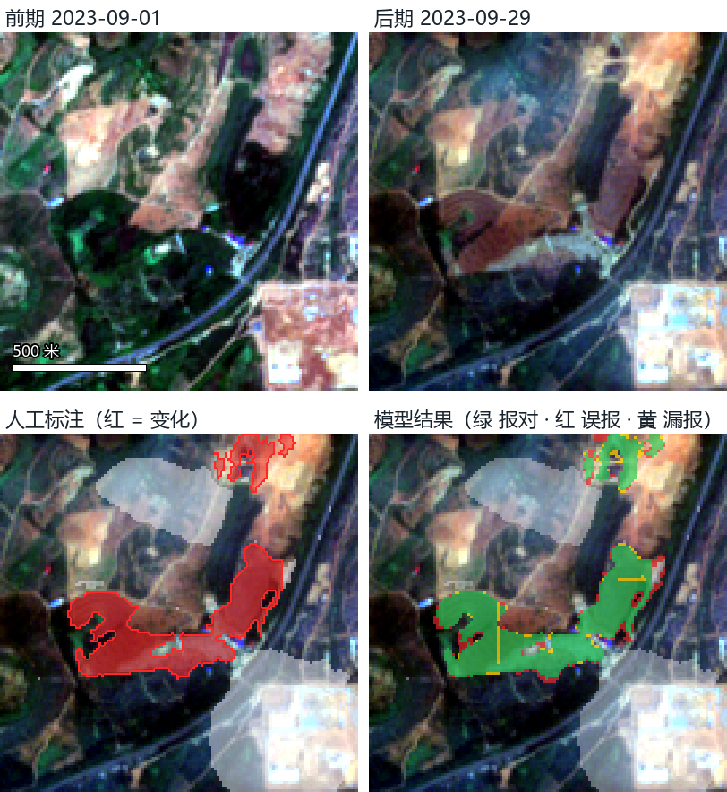
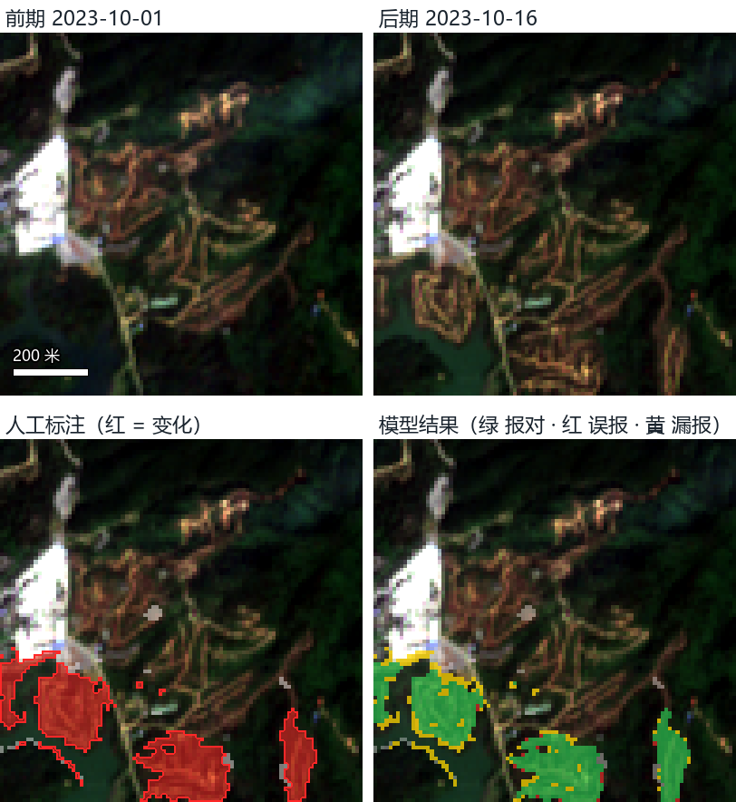
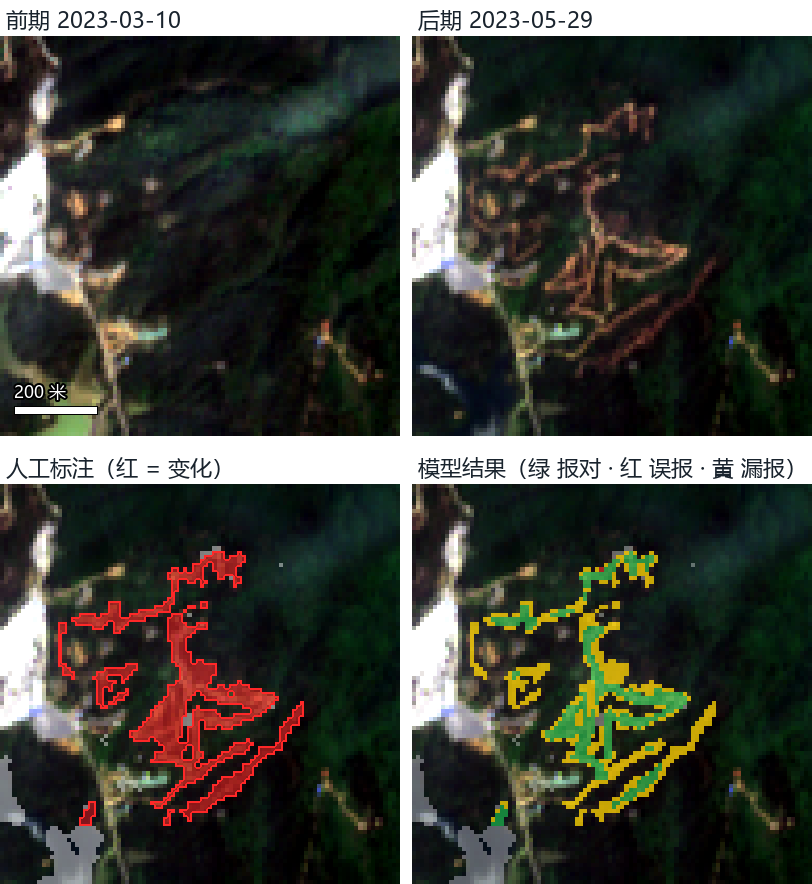
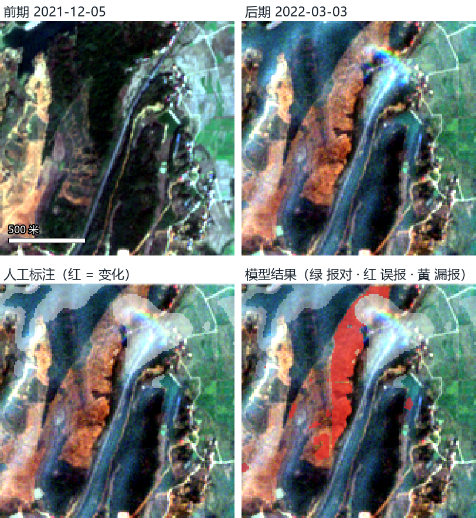
7 与已有研究的比较
平台相关页面：6.2 参考文献
为了判断本研究的精度处在什么水平，我们与公开的 Sentinel-2 变化检测基准 OSCD（Onera Satellite Change Detection）上已发表的结果进行比较（表 7-1）。OSCD 由全球 24 个城市的 Sentinel-2 影像对组成，其中 14 对用于训练、10 对位于其他城市用于测试，这与本研究“换测点”的测试方式相近：测试地点在训练时都没有见过。
表 7-1 与 OSCD 基准上已发表结果的比较（F1）
| 数据与测试方式 | 方法 | 输入 | F1 |
|---|---|---|---|
| OSCD：14 对训练，10 对其他城市测试 | FC-EF（Daudt 等，ICIP 2018） | Sentinel-2 RGB | 0.489 |
| 同上 | FC-Siam-diff（同上） | Sentinel-2 RGB | 0.489 |
| 同上 | FC-Siam-conc（同上） | Sentinel-2 13 波段 | 0.514 |
| 同上 | FC-EF（同上） | Sentinel-2 13 波段 | 0.569 |
| 同上 | FC-Siam-diff（同上） | Sentinel-2 13 波段 | 0.579 |
| 同上 | SatMAE（遥感大模型，ViT-B） | 多光谱 | 0.528 |
| 同上 | SpectralGPT（遥感大模型，ViT-B） | 多光谱 | 0.543 |
| 同上 | SeaMo（遥感大模型，ViT-B） | 多光谱 | 0.545 |
| 本研究：换测点总体 | OlmoEarth + 后段旁支（最终方案） | 12 波段 + 18 个辅助信息层 | 0.635 |
| 本研究：换测点总体 | FC-EF + 全部辅助信息 | 6 波段 + 46 个辅助信息层 | 0.567 |
| 本研究：换测点总体 | OlmoEarth 只用 RGB | RGB | 0.179 |
OSCD 的 FC 系列结果见 Daudt R C, Le Saux B, Boulch A. Fully convolutional siamese networks for change detection. ICIP 2018（arXiv:1810.08462，表 1）；遥感大模型的结果见 SeaMo 论文（arXiv:2412.19237，表 5）。
比较结论。 在 OSCD 上，经典卷积网络用 13 个波段时 F1 为 0.51—0.58，只用 RGB 时为 0.45—0.49；近年的遥感大模型（SatMAE、SpectralGPT、SeaMo）为 0.53—0.55。本研究最终方案的换测点总体 F1 为 0.635，与这些结果处在同一水平并略高。
需要注意的差别。 这一比较只能作为量级参考：（1）OSCD 的变化以城市建设为主，本研究是铁路沿线的乡村和山地环境，变化多为施工清表、山坡开垦、林地采伐等，面积更小、反差更弱；（2）两者对“变化”的定义和标注方式不同，本研究还把季节变化、雾等明确排除在外；（3）本研究的影像包含大量有雾、有薄云的时相。一个直接的旁证是：只用 RGB 时，OSCD 上的 FC-EF 为 0.489，而本研究 OlmoEarth 只用 RGB 时只有 0.179，说明本研究的目标在真彩色影像上更难识别，多光谱和辅助信息的作用也因此更大。
8 误差来源与下一周的改进计划
平台相关页面：2.2.4 伪变化抑制 · 五、方法改进
本节及以后的讨论统一使用换测点总体 F1（三个测点轮流留出测试、合并计算），因为它最能反映模型推广到没见过的新地点的能力，也是将来实际应用最关心的指标。
8.1 当前结果的定位
最终方案的换测点总体 F1 为 0.635，精确率 0.57、召回率 0.72。通俗地说：模型报出的变化像元中，每 100 个约有 57 个确实是需要报告的变化；所有真实变化像元中，约 72% 能被找到。分测点看，韶关南 0.677、衡阳北 0.638、株洲南 0.466。与公开基准相比，这一精度已处在同类研究的上沿（第 7 节），但要用于实际监测，还需要进一步减少误报。为了找准提高的方向，我们把误差拆成以下几个来源（表 8-1），并逐项分析其成因。
表 8-1 最终方案的误差拆解（换测点 F1；“最优门槛”在测试测点上选取，实际无法事先得到，只作上限）
| 评价方式 | 株洲南 | 衡阳北 | 韶关南 | 换测点总体 |
|---|---|---|---|---|
| 验证集门槛 · 全部影像对（正式成绩） | 0.466 | 0.638 | 0.677 | 0.635 |
| 验证集门槛 · 只看无雾影像对 | 0.507 | 0.718 | 0.748 | 0.705 |
| 按训练集变化比例定门槛 · 全部影像对 | 0.342 | 0.747 | 0.643 | 0.651 |
| 最优门槛（上限）· 全部影像对 | 0.492 | 0.753 | 0.737 | 0.726 |
| 最优门槛（上限）· 只看无雾影像对 | 0.546 | 0.787 | 0.759 | 0.753 |
8.2 误差来源分析
（1）门槛在不同测点之间不通用：最大的一项损失。 模型对每个像元输出一个变化概率，需要一个门槛来决定报不报。图 8-1 给出了三个留出测点上 F1 随门槛变化的曲线。三条曲线的最优门槛相差极大：株洲南的最优门槛约为 0.0015，韶关南约为 0.055，而衡阳北高达 0.996。验证集选出的门槛（0.005、0.808、0.920）对三个测点都不是最优。如果每个测点都用自己的最优门槛，株洲南可从 0.466 提高到 0.492，衡阳北从 0.638 提高到 0.753，韶关南从 0.677 提高到 0.737，总体从 0.635 提高到 0.726。当然，最优门槛要用测试测点的标注才能找到，实际做不到，这只是一个上限；但它说明，如果能让门槛自动适应新测点，F1 还有约 0.09 的提升空间。
这一现象说明，模型输出的概率在不同测点之间“刻度”不一致。在衡阳北，大量没有变化的像元（施工区内部、水体边缘等）也得到了很高的变化概率，只有把门槛提得很高才能压住误报；在株洲南和韶关南，真实变化得到的概率普遍偏低，需要降低门槛才能找到它们。根本原因在于三个测点的地物构成和变化类型差别很大：衡阳北以大片施工为主，株洲南和韶关南以山地上零散的小块变化为主；而在“换测点”测试中，模型只见过另外两个测点。
（2）有雾影像。 有雾的影像对 F1 只有 0.518，两期都无雾的影像对为 0.705。只看无雾影像对时，换测点总体 F1 为 0.705，比全部影像对高 0.070。雾使整幅影像变亮、对比度下降，一方面在没有变化的地方造成大片亮度差异（误报），另一方面又会掩盖真实变化（漏报）。有雾的影像对在数据中并不少见，不能简单剔除：保留下来的变化中，约三分之一位于有雾的影像对上。
（3）误报高度集中在衡阳北。 衡阳北的误报占三个测点全部误报的 92%。按这次重标的五类地物（后期影像）统计，这些误报落在水体上 5%、裸露地上 48%、建成区 18%、植被上 28%，几乎不在耕地上（农田季节变化在标注中已统一记为“不算”）；其中约一半（57%）发生在有雾的影像对上。结合影像判读，这些误报主要有三个来源：塘库水面的涨落、水色变化和耀斑；施工区内部频繁的地表翻动（其中一部分可能是漏标的真实变化）；以及雾。
（4）事件级的零散误报。 以事件为单位，报出的变化区域中有 76% 与人工标注没有任何重叠（6.2 节），而且绝大多数在衡阳北。一个自然的想法是去掉面积很小的报出区域。表 8-2 是这一做法的诊断结果（只看趋势；正式取值需在验证集上选择）：去掉面积小于 25 个像元的报出区域后，事件 F1 从 0.345 提高到 0.449，像元级 F1 从 0.635 提高到 0.674，但事件检出率从 0.627 降到 0.453。误报区域的面积中位数为 11 个像元，只有约 43% 小于 10 个像元，说明误报区域多数并不是一两个像元的“噪点”，单靠去碎片只能小幅改善，主要还要靠门槛校准和对雾、水体伪变化的处理。
表 8-2 去掉面积小于 k 个像元的报出区域后的指标变化（诊断，只看趋势）
| 去掉的报出区域 | 事件检出率 | 误报区域占比 | 事件 F1 | 像元级 F1 |
|---|---|---|---|---|
| 不去（正式成绩） | 62.7% | 76.2% | 0.345 | 0.635 |
| 小于 9 个像元 | 60.2% | 68.4% | 0.415 | 0.656 |
| 小于 16 个像元 | 54.2% | 60.6% | 0.456 | 0.671 |
| 小于 25 个像元 | 45.3% | 55.5% | 0.449 | 0.674 |
| 小于 36 个像元 | 38.6% | 50.9% | 0.432 | 0.672 |
（5）小变化和一过性变化。 面积 4—19 个像元（400—1,900 平方米）的小变化，检出率只有 33.7%；水位变化的像元召回率为 34.7%，洪水只有 32.8%。前者受限于 10 米分辨率和编码器 40 米的小块尺度：一个小块内变化只占少数时，信号容易被平均掉；后者主要是训练样本太少（洪水全库只有 2 对），而且这类变化几周内就恢复，与“持续的真变化”的特征差别很大。
（6）方法本身的局限。 除上述数据层面的原因外，当前方法还有几点可以改进：① OlmoEarth 的时间编码目前使用固定的两个月份，没有传入真实的成像日期，模型因此无法利用“这是哪个季节、两期相隔多久”这类信息；② 全图使用同一个门槛，不随测点和成像条件调整；③ 多数实验只训练了一次，部分结论可能受随机波动影响（3.3 节）。
8.3 下一周的改进计划
针对上述误差来源，下一周计划按优先级开展以下工作（表 8-3），目标是在不改变评价方式的前提下，继续提高换测点总体 F1。
表 8-3 下一周的改进计划（依据均为换测点总体 F1）
| 优先级 | 改进方向 | 针对的问题 | 依据与潜在收益 | 主要做法 |
|---|---|---|---|---|
| 1 | 门槛自适应 | 门槛在不同测点之间不通用 | 最优门槛上限 0.726（+0.091）；按训练集变化比例定门槛已达 0.651 | 按变化比例定门槛；测点级概率校准；训练时缩小测点间差异 |
| 2 | 雾的处理 | 有雾影像误报、漏报 | 只看无雾影像对为 0.705（+0.070） | 有雾时换用清晰前期影像；有雾样本加权；逐像元雾浓度 |
| 3 | 水体伪变化与标注复核 | 衡阳北误报占 92%，多在水体、裸露地、建成区 | 待实验 | 常年水体边缘单独建模；水色、耀斑作难负样本；逐片复核施工区 |
| 4 | 时序持续性检验 | 一过性伪变化 | 待实验 | 用后续 1—2 期清晰影像检验变化是否持续（水体类除外） |
| 5 | 传入真实成像日期 | 时间编码使用固定月份 | 待实验 | 把真实日期传入 OlmoEarth 的时间编码 |
| 6 | 多种子与集成 | 单次训练的随机波动 | 全部辅助方案 3 个种子 0.615 ± 0.013；三组方案待复核 | 关键结论补做 3 个种子；多模型集成 |
| 7 | 完善与“先分割、后比较”的对比 | 两条路线目前仍有不可比因素 | — | 统一标注口径后重新对比 |
① 门槛自适应（优先级最高）。 目标是在不使用新测点标注的前提下，让门槛自动适应新测点。计划比较三种做法：（a）按变化比例定门槛——用新测点影像本身估计变化像元的大致比例（例如利用光谱变化强度和往年同期信息），再取模型输出概率的相应分位数作为门槛；（b）测点级概率校准——在新测点上，用全部影像的输出分布对概率做整体平移或缩放，使其与训练测点的分布一致；（c）训练时缩小测点差异——按测点均衡抽样，并在损失中加入使不同测点输出分布一致的约束。初步诊断显示，仅按训练集的变化比例定门槛，总体 F1 就从 0.635 提高到 0.651；理论上限为 0.726。
② 雾的处理。 （a）对前期影像有雾的影像对，自动换用之前最近的一期清晰影像作前期（标注平台已支持为每个变化框指定前期影像）；（b）训练时对有雾的样本单独加权，并在辅助信息中加入逐像元的雾浓度估计，使模型在雾区给出更保守的输出；（c）评价时同时报告“全部影像对”和“无雾影像对”两个数。
③ 衡阳北的水体伪变化与标注复核。 水位涨落按规则应当报告，水色变化和耀斑不报告，两者需要区分。计划利用历史有水比例和耀斑角，对常年水体边缘单独建模，并把水色、耀斑造成的差异作为难负样本加大权重。同时，对模型报出、但人工标为没变的集中区域（主要在衡阳北施工区）逐片复看，确认是误报还是漏标；确认的漏标补进标签。
④ 时序持续性检验。 对植被、裸土、建筑类变化，用其后 1—2 期清晰影像检验变化是否持续存在，滤掉一过性的伪变化（例如雾、耀斑造成的假变化）；水位、洪水类变化本身是一过性的，不使用这一条。
⑤ 传入真实成像日期。 把每个影像对前后两期的真实日期传入 OlmoEarth 的时间编码，让模型知道两期分别处在什么季节、相隔多久，有助于区分季节变化和真实变化。
⑥ 结果稳定性。 对最终方案（三组辅助信息）、全部 46 层的对照和关键的消融结论（地形组有用、雷达组没有证据有用）补做 3 个随机种子，并尝试多个模型的集成。
⑦ 完善与“先分割、后比较”路线的对比。 目前分割标注与变化标注之间仍有不可比的因素，下一周完善后再给出两条路线的对比结论。
9 临河铁路段：铁路一侧的河岸与洪水
平台相关页面：2.2.5 河岸线研究 · 1.4.3 河岸线标注规范 · 2.3.5 河岸线研究（高分辨率）
9.1 研究问题
京广铁路在株洲南测点沿湘江东北岸、在韶关南测点沿北江东南岸通过，两处都有较长的临河段。对铁路安全而言，需要关注的是靠铁路一侧的河岸：水边线离铁路有多近，岸坡有多陡，水边线会不会随季节或逐年向铁路推进，洪水时铁路一侧会被淹到哪里。本节只分析铁路一侧，对岸只作对照，回答四个问题：
- 铁路一侧的水边线离铁路有多远，哪些河段离得最近；
- 铁路一侧的水边线在季节之间、年份之间是否向铁路移动；
- 铁路一侧的水边线对水位涨落有多敏感；
- 洪水和异常高水位时，铁路一侧的水边线如何变化（9.5 节）。
需要说明，本节研究的是影像上可见的水边线，即水面与陆地的分界线。它随水位涨落而移动，与工程意义上的岸坡坡脚、堤脚不是一回事。10 米影像给出的是筛查级别的结论，数米级的差异需要高分辨率影像或现场核实。
9.2 研究区与数据
两个测点各取 2.56 km × 2.56 km 的范围（表 9-1）。影像为 2021 年 7 月至 2026 年 7 月的全部 Sentinel-2 L2A 影像，按云、雾和缺测程度分为 A、B、C 三级，A、B 级用于主要分析。沿河道中心线每 100 米布设一条垂直于河道的量测断面，正方向统一指向铁路一侧；与铁路相交的断面构成“临河铁路段”。
表 9-1 两个临河测点的基本情况
| 测点 | 河流 | 铁路所在岸 | Sentinel-2 影像（A / B / C 级） | 临河断面 |
|---|---|---|---|---|
| 株洲南 | 湘江 | 东北岸 | 181 景（93 / 55 / 33） | 31 条 |
| 韶关南 | 北江 | 东南岸 | 117 景（62 / 47 / 8） | 26 条 |
铁路位置取自 OpenStreetMap，局部有约 10 米的定位误差。岸坡坡度由 Copernicus 30 米数字高程模型计算，重采样到 10 米。洪水分析另外使用了 Sentinel-1 雷达影像：VV 极化后向散射，经地形校正后以分贝表示，与光学影像处在同一个 10 米网格上。雷达不受云雨影响，可用来独立核对光学影像上的水面变化。
9.3 方法
（1）逐景识别水体，提取水边线。 采用三个互补的水体指标：
MNDWI = (B3 − B11) / (B3 + B11) GS = B3 − B11 GN = B3 − B8
其中 B3 为绿光、B8 为近红外、B11 为短波红外波段。MNDWI（改进归一化水体指数，Xu，2006）利用水体在短波红外上反射极低的特点增强水体；GS 保留绿光与短波红外之差，避免分母过小时放大噪声；GN 用近红外区分水体与植被和部分阴影。每个指标在河道走廊内用 Otsu 方法（Otsu，1979）自动确定水陆分割阈值，三个指标投票决定每个像元是否为水。季节合成前，先对 20 米的短波红外波段做锐化，并用稳定陆地上的植被指数做相位相关，校正每景相对参考景的平移。在合成图上，以“纯水”与“纯陆地”指标值的中点为阈值追踪等值线，得到亚像元精度的水边线（Bishop-Taylor 等，2019）。为了防止山体阴影被当成水，近红外很亮的像元一律记为陆地，铁路外侧 10 米以外也一律记为陆地。
（2）铁路一侧的指标。 设某条断面上铁路的位置为 s铁，水边线的位置为 s水（米，沿断面量测，正方向指向铁路）：
D = s铁 − s水 Δ季 = s水冬 − s水夏 Δ年 = s水2025冬 − s水2022冬
D 是水边线到铁路的距离，取多年 A 级影像的中位数；Δ季 是多年冬季合成与多年夏季合成的位置差（夏季为 6—9 月，冬季为 12 月至次年 2 月）；Δ年 是最晚与最早两个冬季合成的位置差。两个差值为正，都表示水边线向铁路移动。另外统计三项：单景摆动幅度，即单景水边线位置的 5%—95% 分位范围；岸坡坡度，即水边线与铁路之间的平均坡度；水位敏感度，即铁路侧水边线位置对河段水面宽度指标 q 的 Theil–Sen 斜率。q 是每景各断面河宽相对多年中位数的偏差再取中位数，正值表示水面比常态宽。敏感度为 1，表示水面每宽 1 米，铁路侧水边线就外移 1 米。
（3）洪水与高水位。 选取研究期内水面最宽的两次事件（9.5.1 节），与常态比较。常态取各断面 A 级影像水边线位置的中位数。逐断面计算事件影像上铁路侧水边线的位移和离铁路的距离，并检查它是否超出该断面在其余影像中的 95% 分位，即平常的变动上限。面积上，把“本景是水、而多年水体出现频率低于 0.1”的像元记为新增水面，按是否与河道连通、离铁路多远分段统计。雷达影像上，以事件前后两期合并后的 Otsu 阈值区分水面，比较两期的水面面积，作为光学结果的独立核对。
（4）精度。 一是重复性：比较间隔不超过 10 天的 A 级影像对在同一断面上的水边线位置；二是与已有的 5 期高分辨率影像比较。
9.4 结果：铁路一侧的岸坡与水边线
（1）距离与岸坡。 韶关南的铁路紧贴北江：26 条临河断面中，水边线到铁路的距离中位数只有 24.6 米，最近处 10.5 米（沿河里程 2.25 千米），18 条在 50 米以内，其中 7 条在 20 米以内。株洲南离得较远：31 条断面的中位数为 100.1 米，最近处 25.4 米（里程 1.45 千米），12 条在 50 米以内，集中在里程 0.85—1.95 千米一段。两处离铁路最近的河段都是陡岸：50 米以内断面的岸坡坡度，株洲南中位 15.4°、最陡 22.0°，其余断面只有 2.9°；韶关南分别为 19.2°、29.2° 和 5.7°（表 9-2，图 9-1 左列）。
表 9-2 铁路一侧水边线的位置与变化（全部临河断面）
| 指标 | 株洲南 | 韶关南 |
|---|---|---|
| 水边线到铁路：最近 / 中位数 | 25.4 米 / 100.1 米 | 10.5 米 / 24.6 米 |
| 距离在 50 / 30 / 20 米以内的断面 | 12 / 5 / 0 条 | 18 / 15 / 7 条 |
| 50 米以内断面的岸坡坡度：中位 / 最陡 | 15.4° / 22.0° | 19.2° / 29.2° |
| 季节差 Δ季：中位数（5%—95% 分位） | −1.7 米（−3.7—+1.4） | −0.3 米（−2.6—+8.4） |
| 跨年差 Δ年：中位数 | −0.3 米 | −0.8 米 |
| 单景摆动幅度：中位数（最大） | 5.7 米（19.2 米） | 6.4 米（14.3 米） |
| 水位敏感度：铁路侧 / 对岸 | 0.01 / 0.92 | 0.55 / 0.49 |
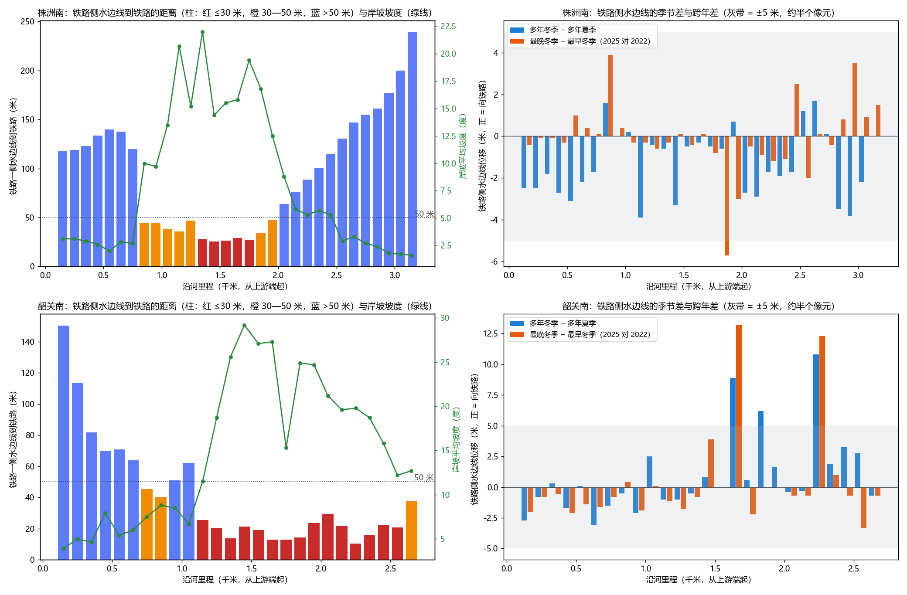
（2）季节和年际变化。 株洲南全部 31 条断面的季节差和跨年差都在 ±5 米（约半个像元）以内，中位数为负，即冬季、近年的水边线略离开铁路，没有逼近铁路的迹象（图 9-2）。韶关南多数断面同样在 ±5 米以内，但有三条断面（里程 1.65、1.85 和 2.25 千米）的季节差为 +6.2—+10.8 米，其中两条的跨年差也达到 +12—+13 米。
逐景核对表明，这三处是冬季陡坡阴影造成的假象，而不是岸线向铁路推进（表 9-3）。依据有四条：
- 只有冬季影像异常。 里程 1.65 千米处，夏季和春秋季单景水边线到铁路的距离中位数分别为 23.5 米和 21.4 米，冬季却是 −28.0 米，即“水边线”落到了铁路的另一侧，这在物理上不可能。
- 几乎每个冬季都重复出现。 该处 2021—2026 年六个年份的冬季影像分别为 −30.5、−30.3、−28.0、+12.4、−25.2 和 −35.1 米，六年中有五年出现，春季一到就恢复正常。
- 与水文规律相反。 冬季是北江的枯水期，真实的水边线只会后退，不会向铁路推进。
- 地形条件吻合。 这几处岸坡约 20°—27°，坡面朝向河道、背向冬季的太阳。冬季太阳高度低，坡面处在阴影中，暗色的坡面被误判为水体。
里程 2.25 千米处单景的冬季与夏季中位数只差约 3 米（13.4 米对 16.1 米），合成图上的 +10.8 米主要来自个别冬季影像。
表 9-3 韶关南三条异常断面的逐景核对：单景水边线到铁路的距离（中位数，米；负值表示落在铁路另一侧）
| 沿河里程 | 岸坡坡度 | 夏季（6—9 月） | 春、秋季 | 冬季（12—2 月） | 冬季按影像年份（2021—2026） |
|---|---|---|---|---|---|
| 1.65 千米 | 27.3° | 23.5（39 景） | 21.4（31 景） | −28.0（29 景） | −30.5、−30.3、−28.0、+12.4、−25.2、−35.1 |
| 1.85 千米 | 24.9° | 21.3（35 景） | 21.3（29 景） | 9.2（28 景） | +19.1、−36.4、−10.1、−29.6、+13.7、+9.1 |
| 2.25 千米 | 19.8° | 16.1（36 景） | 15.7（28 景） | 13.4（27 景） | −11.6、+9.2、+13.1、+14.6、+14.2、+8.6 |
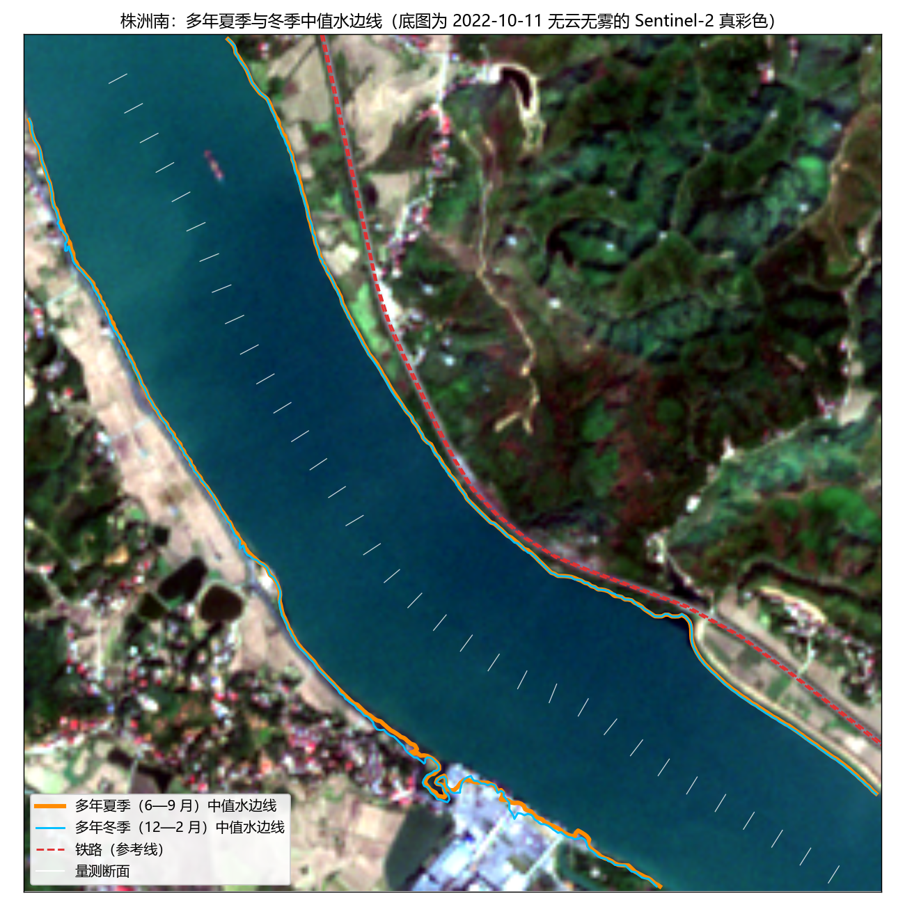
（3）水位敏感度。 株洲南铁路一侧的敏感度只有 0.01，对岸为 0.92：水面宽度的变化几乎全部发生在对岸的滩地上，铁路一侧是陡岸，水位涨落基本不移动水边线。韶关南两岸都约为 0.5，即水面每宽 1 米，铁路一侧的水边线约外移 0.5 米。
（4）精度。 重复性方面，间隔不超过 10 天的影像对在同一断面上的水边线位置之差，中位数韶关南为 1.1 米、株洲南为 1.4 米。与已有高分辨率影像相比（表 9-4），株洲南铁路一侧的绝对差中位数为 1.0—2.3 米；韶关南 2026 年一期为 3.6 米，其余四期为 6.0—16.8 米。韶关南偏差较大，可能与高分影像成像日期不明（水位不同）和陡坡阴影有关，因此韶关南米级的结论可靠性低于株洲南。需要注意，这一核对用 Sentinel-2 的结果提供训练样本和搜索范围，并非独立的人工真值。
表 9-4 10 米水边线与高分辨率影像水边线的偏差（铁路一侧，米）
| 高分影像期次 | 株洲南：绝对差中位数（90% 分位） | 韶关南：绝对差中位数（90% 分位） |
|---|---|---|
| 2024 年第一期 | 2.3（5.0） | 6.0（14.1） |
| 2024 年第二期 | 1.9（3.9） | 16.8（27.3） |
| 2025 年第一期 | 1.4（3.3） | 9.7（19.3） |
| 2025 年第二期 | 1.4（4.0） | 13.3（26.5） |
| 2026 年 | 1.0（3.0） | 3.6（10.6） |
9.5 洪水分析
9.5.1 研究期内的洪水与高水位
表 9-5 研究期内两个临河测点的洪水与高水位事件
| 测点 | 事件 | 依据 | 可用影像 |
|---|---|---|---|
| 韶关南 | 2022 年 6 月北江洪水 | 韶关市三防指挥部 6 月 21 日 2 时发布洪水预警、7 时将防汛应急响应提升为Ⅰ级，预计韶关市区 21 日 14 时前后出现 56.6 米的洪峰水位，接近 2006 年的洪峰（羊城晚报，2022-06-21）；北江下游石角站预计 23 日前后出现每秒 2 万立方米的洪峰流量，为有数据记载以来北江下游的最大洪水（中国新闻网，2022-06-22） | 光学：6 月 23 日，约在洪峰后 1—2 天；雷达：6 月 2 日（洪水前）、6 月 26 日 |
| 韶关南 | 2024 年 4 月北江洪水 | 4 月 20 日石角站流量涨到每秒 1.2 万立方米，编号为“北江 2024 年第 2 号洪水”；预报北江干流下游出现接近百年一遇的洪水，韶关、清远出现洪涝灾情（中国科技网综合，2024-04-22） | 2024 年 1 月 19 日至 5 月 28 日之间没有一景可用的光学影像；本机已有的雷达只有 1 月 11 日和 5 月 22 日两期 |
| 株洲南 | 2026 年 6 月 2 日异常高水位 | 水面比常态宽约 106 米，其余所有影像都在 ±15 米以内；雷达 5 月 31 日同样显示水面增加。未查到这几天湘江株洲段的公开洪水报道，成因待水文资料核实 | 光学：6 月 2 日；雷达：5 月 7 日、5 月 31 日 |
本研究的变化标注中，“洪水”这一类只来自韶关南 2022 年这一次：2022-04-09 与 2022-06-23 这一对影像上标了 198 个像元，是对岸一片低洼地被淹（洪水前多为植被和裸地），离铁路约 800 米。另有 2026-03-14 与 2026-06-27 这一对上标作洪水的 20 个零星像元，查不到对应的洪水记录，面积也很小，本报告在全部计算中把它们按“水位变化”统计，标签本身暂不修改。
9.5.2 结果
表 9-6 洪水与高水位事件中铁路一侧的变化
| 指标 | 韶关南 2022-06-23（北江洪水后 1—2 天） | 株洲南 2026-06-02（异常高水位） |
|---|---|---|
| 铁路侧水边线位移：中位数 / 90% 分位 / 最大（米，正值 = 向铁路） | +0.1 / +2.4 / +4.0 | −0.4 / +2.2 / +28.2 |
| 离铁路最近的距离：平时 → 本景 | 13.6 米 → 9.6 米 | 20.1 米 → 20.9 米 |
| 超出平常变动上限的断面 | 0 / 26 条 | 1 / 31 条 |
| 对岸水边线外扩：中位数 / 最大 | 2.8 米 / 9.1 米 | 107.5 米 / 206.2 米 |
| 新增水面合计（光学） | 2.3 公顷 | 18.5 公顷 |
| 其中离铁路 100 米以内：与河道连通 / 不连通 | 0.53 / 0 公顷 | 0.36 / 1.34 公顷 |
| 与河道连通的新增水面离铁路最近 | 10 米 | 30 米 |
| 河道两侧 300 米内的雷达水面面积：事件前 → 事件后 | 90.9 → 92.1 公顷（6 月 2 日 → 6 月 26 日） | 207.9 → 226.8 公顷（5 月 7 日 → 5 月 31 日） |
韶关南。 洪峰后 1—2 天，北江江水浑黄、明显上涨（图 9-3b），但铁路一侧水边线的位移中位数只有 +0.1 米，最大 +4.0 米（里程 2.25 千米，离铁路 9.6 米），26 条断面都没有超出各自平常的变动范围（图 9-3d）。离铁路 100 米以内的新增水面只有 0.53 公顷，全部与河道连通，是陡岸上水边线前移 0—4 米形成的窄条。新增水面主要出现在对岸（图 9-3c），变化标注里的那片“洪水”就是对岸被淹的低洼地。雷达在 6 月 26 日、即洪峰后约 5 天看到的水面面积只比洪水前多 1.2 公顷，说明这时洪水已基本退去。
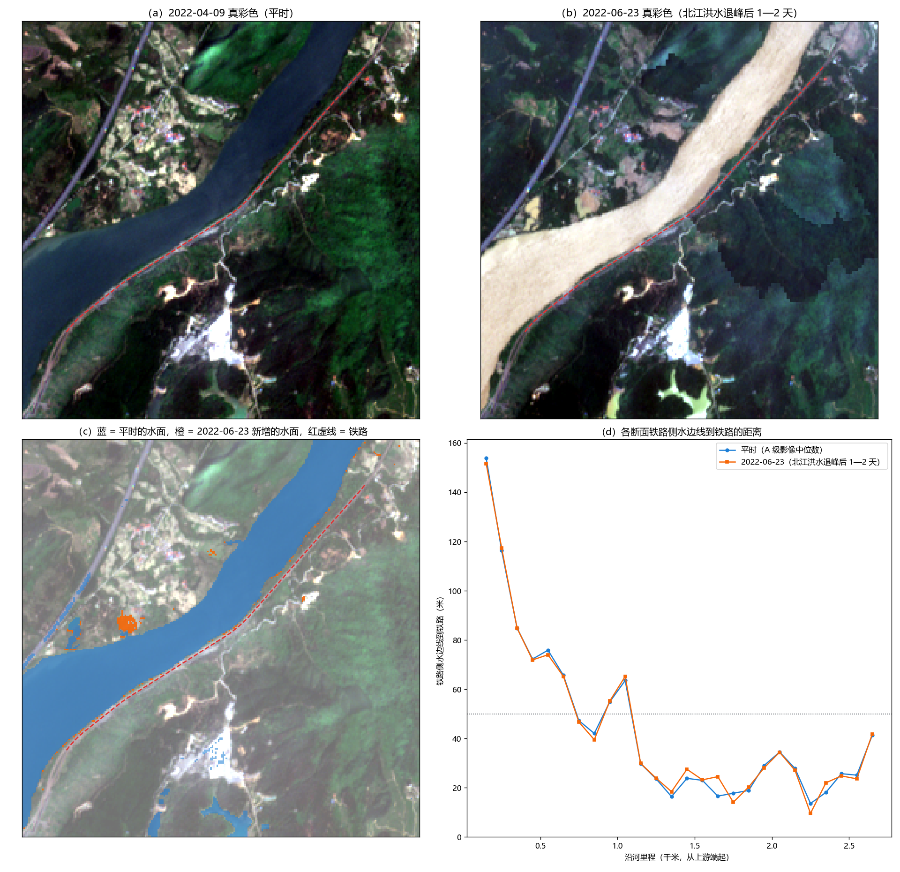
株洲南。 2026 年 6 月 2 日对岸滩地大面积被淹，对岸水边线平均外扩 107.5 米，最多 206 米；铁路一侧的水边线基本不动，位移中位数 −0.4 米，离铁路最近的断面仍为 20.9 米（图 9-4）。唯一超出平常范围的断面在里程 2.55 千米，那里岸坡平缓（2.9°）、离铁路约 125 米，水边线向铁路移动 28 米后，离铁路仍有约 97 米。离铁路 100 米以内的 1.7 公顷新增水面中，1.34 公顷不与河道连通，是零散的积水，不是河水漫上来。
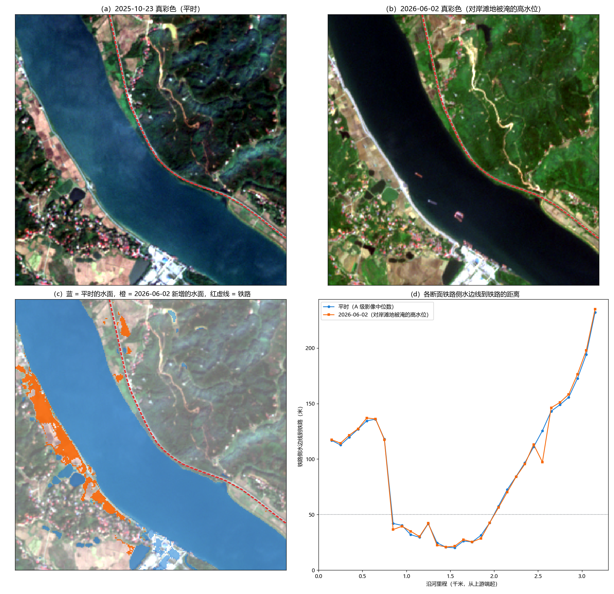
机理。 铁路一侧的陡岸限制了水边线的水平移动。水位上升 Δh 时，水边线大致水平移动 Δh / tan θ，θ 为岸坡坡度：在 20° 的岸坡上水位上涨 2 米，水边线只移动约 5.5 米；而对岸平缓的滩地会被大面积淹没。这与 9.4 节中铁路一侧水位敏感度很低的结果一致。
9.5.3 局限与建议
- 光学影像拍不到洪峰。 韶关南 2022 年的影像在洪峰后 1—2 天，洪峰时的淹没范围比这更大；2024 年 4 月北江洪水期间，韶关南没有一景可用的光学影像（1 月 19 日只有 65% 可用，5 月 28 日只有 42%），本机已下载的雷达影像也只有 1 月 11 日和 5 月 22 日两期，这次洪水完全没有被记录下来。
- 不能证明洪水没有越过铁路。 提取水边线时假设“水不会越过铁路”，铁路外侧 10 米以外一律记为陆地；铁路位置取自 OpenStreetMap，局部误差约 10 米。
- 雷达只作面积核对。 雷达在陡坡上有叠掩和阴影，陡岸附近的水面判别不可靠。
- 建议。 洪水研究以不受云雨影响的 Sentinel-1 雷达为主，补下载 2024 年 4 月等汛期的雷达影像；收集北江韶关站、湘江株洲站的逐日水位；结合台账中的水淹事件做对照研究（10.3 节）。
9.6 结论
- 韶关南的铁路紧贴北江，26 条临河断面中有 18 条的水边线离铁路不到 50 米，最近约 10 米，是需要重点关注的河段；株洲南最近约 25 米，31 条中有 12 条在 50 米以内。两处离铁路最近的河段都是 15°—29° 的陡岸。
- 2021—2026 年，两处铁路一侧的水边线在季节之间、年份之间的变化都在 ±5 米（约半个像元）以内，没有向铁路推进的迹象。韶关南三条断面冬季的“靠近”，经逐景核对是冬季陡坡阴影造成的假象。
- 2022 年 6 月北江洪水退峰后 1—2 天，韶关南铁路一侧的水边线仍在平常的变动范围之内，被淹的主要是对岸的低洼地；株洲南 2026 年 6 月初的高水位淹没了对岸滩地，铁路一侧基本不变。陡岸使铁路一侧对水位涨落很不敏感。
- 10 米光学影像适合做水边线的历史筛查，但拍不到洪峰，也不能判断岸坡稳定性和安全距离。洪水监测需要雷达影像和水文记录，数米级的差异需要同日期的亚米级影像或现场核实（第 10 节）。
参考文献： Xu H. Modification of normalised difference water index (NDWI) to enhance open water features in remotely sensed imagery. International Journal of Remote Sensing, 2006, DOI: 10.1080/01431160600589179；Otsu N. A threshold selection method from gray-level histograms. IEEE Transactions on Systems, Man, and Cybernetics, 1979, 9(1): 62–66, DOI: 10.1109/TSMC.1979.4310076；Bishop-Taylor R 等. Sub-pixel waterline extraction: characterising accuracy and sensitivity to indices and spectra. Remote Sensing, 2019；羊城晚报. 韶关市三防指挥部发布洪水预警（2022-06-21），news.ycwb.com/2022-06/21/content_40861821.htm；中国新闻网. 广东北江干流水位持续上涨（2022-06-22），www.chinanews.com.cn/gn/2022/06-22/9785777.shtml；中国科技网. 北江 2024 年第 2 号洪水（2024-04-22），www.stdaily.com/web/gdxw/2024-04/22/content_1957970.html。
10 下一步：高分辨率影像、河道补充影像与台账研究
平台相关页面：2.3 三个测点 · 高分辨率 · 3.1 台账整理与核验 · 3.4 灾前线索分析 · 台账判读台 ↗
10.1 高分辨率影像：要解决什么、买哪些日期
要解决的问题
10 米影像有两类标注只能靠亚米级影像核实：
- 标为变化、但在 10 米上看不清的地方：窄条、点状、边缘上的变化，人工判读时记为“这一对看不出”或“说不清”。
- 标为没变、但可能漏标的地方：逐片判读时发现的、标注框以外的持续性变化。
高分前后两期才能分清清表、挖填、新修道路或建筑，与雾、阴影、作物物候；只有一张后期图，只能确认现在是什么地物，确认不了什么时候变的。洪水和水位变化还需要近同时的影像和水文记录。
日期怎么选
对每个影像对数“待核实片”：标为变化但判读为“看不出 / 说不清”的片，加上标为没变但判读为“疑似真实变化 / 说不清”的片。按这个数从多到少排，每个测点取前三个不同日期。这个排序衡量的是“这一对里有多少标注需要高分来核实”，并不代表模型一定在这里出错。
排好之后再和最好模型的错漏图对照，避免只买模型做得好的案例：株洲南 2024-08-04、衡阳北 2024-03-29 都是最好模型漏检最多的影像对；韶关南 2023-10-16 是误报最多的影像对之一（见 2.6 节）。
| 测点 / 优先级 | 前期 → 后期 | 购买窗口（前期；后期） | 标为变化但看不清的片 | 疑似漏标：判读为真变化 | 疑似漏标：说不清 | 疑似漏标片总数（含已判为农田、物候的） | 人工框数 | 排序分 / 涉及像元 |
|---|---|---|---|---|---|---|---|---|
| 株洲南 / 1 | 2024-07-22 → 2024-08-04 | 07-19—07-25；08-01—08-07 | 21 | 1 | 0 | 2 | 7 | 22 / 256 |
| 株洲南 / 2 | 2025-08-04 → 2025-08-09 | 08-01—08-07；08-06—08-12 | 0 | 1 | 2 | 3 | 0 | 3 / 16 |
| 株洲南 / 3 | 2021-08-02 → 2021-08-22 | 07-30—08-05；08-19—08-25 | 2 | 0 | 0 | 1 | 2 | 2 / 22 |
| 衡阳北 / 1 | 2024-02-11 → 2024-03-29 | 02-08—02-14；03-26—04-01 | 16 | 0 | 3 | 3 | 3 | 19 / 295 |
| 衡阳北 / 2 | 2026-06-17 → 2026-07-10 | 06-14—06-20；07-07—07-13 | 19 | 0 | 0 | 0 | 4 | 19 / 217 |
| 衡阳北 / 3 | 2023-11-28 → 2023-12-23 | 11-25—12-01；12-20—12-26 | 4 | 1 | 7 | 8 | 5 | 12 / 82 |
| 韶关南 / 1 | 2023-10-01 → 2023-10-16 | 09-28—10-04；10-13—10-19 | 11 | 3 | 0 | 3 | 2 | 14 / 38 |
| 韶关南 / 2 | 2023-11-25 → 2023-12-25 | 11-22—11-28；12-22—12-28 | 7 | 0 | 1 | 3 | 1 | 8 / 28 |
| 韶关南 / 3 | 2023-07-23 → 2023-10-01 | 07-20—07-26；09-28—10-04 | 0 | 0 | 7 | 7 | 2 | 7 / 57 |
说明：排序分 = 前三列数字之和；“片”是逐片判读时的最小判读单元。购买窗口是目标日期前后各 3 天；持续性的地表改变，在确认事件不跨窗口后可放宽到前后 7 天；水边线尽量同一天，优先 24 小时内；隔到 48 小时要有水位资料证明水位相近。前后两期必须各有一景，不能拿跨过事件的日期顶替。
首批建议买 6 期（每个测点优先级第一的一对）：株洲南 2024-07-22 和 2024-08-04；衡阳北 2024-02-11 和 2024-03-29；韶关南 2023-10-01 和 2023-10-16。
河岸线：窄水面、宽水面各补一期
“枯水 / 丰水”要靠真实的水位、流量或调度资料确认。目前先用 10 米影像算出的河宽指标（见 2.9 节，单位是水平方向的米，不是垂直水位），在每个测点取指标处在 10% 和 90% 分位附近的实际日期，避开孤立的最大值。
| 测点 | 待核实的水面状态 | 目标日期 | 购买窗口 | 河宽指标 / 有效断面数 |
|---|---|---|---|---|
| 株洲南 | 窄水面（指标偏低） | 2024-10-03 | 09-30—10-06 | −3.85 米 / 22 |
| 株洲南 | 宽水面（指标偏高） | 2023-01-07 | 01-04—01-10 | 7.05 米 / 21 |
| 韶关南 | 窄水面（指标偏低） | 2024-11-29 | 11-26—12-02 | −2.55 米 / 24 |
| 韶关南 | 宽水面（指标偏高） | 2022-10-26 | 10-23—10-29 | 2.70 米 / 24 |
株洲南两期先用，检验铁路一侧几米的位移、对岸局部的进退；韶关南两期作为下一批。挑出的日期和传统枯丰水月份不完全一致，这正是要用水文资料核实的原因。手头已有的高分资料只标了“某年第一期 / 第二期”，应先向提供方要准确成像日期和定位资料，可能可以少买几期。
询价和验收时要对方逐期给出
成像的准确日期和时刻、卫星和传感器、云和阴影覆盖图、产品级别、全色和多光谱的原生分辨率、正射和定位资料（含有理多项式系数）、太阳和观测角度、授权范围、含税总价。目标是亚米全色加真实配套的多光谱；标称 0.5 米的融合真彩色或插值产品要写明各波段的原生分辨率，AI 超分辨率的图不能当原生细节用。
验收时：每个事件保留发生前、发生后两期；逐个核对目标框里没有云和阴影遮挡，不能只看整景的云量。河岸线核对另外需要近同时的水文记录、独立的人工描线和统一的配准基准，描线的人事先不看 10 米岸线结果。
目前只做了需求分析，还没有联系供应商、下单或付款。
10.2 河道补充影像
河道需要补充的窄水面、宽水面日期见 10.1 节。补齐后，在高分辨率影像上逐期人工勾画水边线，核对 10 米水边线（第 9 节）的位置误差和季节涨落幅度，再判断 10 米结果能否直接用于岸线监测。
10.3 台账研究
台账研究使用铁路方提供的历史水害台账，其明细按平台公开范围只在内部版提供。研究问题和做法见 3.1 台账整理与核验、3.4 灾前线索分析；台账事件的判读在 台账判读台 上进行。
11 具体安排
平台相关页面：台账判读台 ↗ · 三测点判读系统 ↗ · 6.3 汇报记录
1 马上可以接着做：三个测点的亚米级实验
- 选哪些期次
- 只买“真正有迟疑”的期次：10 米上看不清、标注说不清、这一对看不出、疑似漏标的事件，以及河岸线需要枯水期、丰水期核对的日期。
- 清单和优先级见第 3.1 节“高分影像需求清单”。
- 标注方式：和这次一样，三步走。
- AI 建议：沿用这次的 AI 预标流程。变化检测用 AI 精标；分割用对齐规则，按段定类、三成规则、云独立判定。
- 同学自行标注、修改：在标注台上做。
- 组长精调：变化标注和分割标注都要按这次定下的对齐规则逐像元核对，至少两遍全量。
- 标注台就用现有的变化精标台、地物精标台和 AI 复核台，换成亚米影像。
- 实验
- 跑的实验和这次完全相同：同样的候选模型、融合方式、四种划分、验证集选阈值。这样 10 米和亚米的结果可以直接对比。
- 算力
- 今晚三块卡（RTX 4090、RTX 5090、RTX 3090）连续满载约 10 小时，才跑完单种子的主要对比。
- 亚米影像数据量大得多，还要补多种子。想请老师问问能否申请学校超算中心的 GPU。
2 台账事件
- 我这边尽快出一个和变化精标台类似的台账标注台，加上标准说明：
- 每个事件取发生前、后最近的能看清的影像；
- 标出事件范围、类型，以及“这一对是否看得出”。
- 台账记录较多，涉及几千景影像，量大，不让同学标。标注台和标准说明完整搭好、我自己试标验收后，交给标注公司。
- 拿到反馈后，跑和这次相同的实验，再做第 3.3 节的四个研究问题：
- 能否检出；
- 持续性和预测预防；
- 触发的临界点；
- 10 米对亚米。
3 时间（建议）
| 时间 | 事项 |
|---|---|
| 本周 | 定高分采购清单和预算；亚米标注台改造 |
| 下周 | 同学标注 + 组长精调；台账标注台和标准说明交付标注公司 |
| 之后 | 亚米实验；台账反馈回来后做检出、持续性和临界点分析 |
附录
数字复核
本报告每个数字都由生成程序直接从实验结果文件计算，来源文件清单存在本机，供复核。
完整工作底稿
全部原始表格和过程记录在本机工作目录，不放到平台上。